控制系统做得好不好，最终不是由传递函数的形式决定的，而是由它在时间轴上的表现决定的：给定一个阶跃指令，输出多久跟上、冲过头多少、来回摆几次、最后停在哪儿。把这四件事量化，就是本章要讲的时域性能指标。它们既是设计目标，也是验收依据，还是不同控制方法之间横向比较的共同尺度。
某台伺服轴需要把工件从 0 推到 100 mm。工艺给出的要求是：0.30 s 内到位，超调不超过 5%，到位后不允许持续抖动。工程师先按经验把位置环增益调大，轴确实动得快了，但停在 104 mm 附近才慢慢退回，夹具被撞了一下；把增益调小，冲击没有了，节拍却从 1.2 s 掉到 1.8 s，产线不干。
这类“快了就冲、稳了就慢”的取舍，用两个数就能描述清楚：上升时间刻画快慢，超调量刻画平稳程度。剩下的工作，是把这两个数与控制器参数之间的定量关系找出来，而不是靠反复试。
控制系统交付时，甲方不会检查伯德图，只会看阶跃响应曲线。因此工程合同、验收大纲、行业标准里出现的都是时域指标。表 37-1 给出本书统一使用的五个指标及其工程含义。
| 指标 | 符号 | 定义 | 典型验收值 | 现场测点 |
|---|---|---|---|---|
| 超调量 | M_p | 峰值超出稳态值的百分比 | ≤ 5%–20% | 输出峰值 |
| 上升时间 | t_r | 10%→90% 稳态值所需时间 | 按节拍定 | 输出 10%/90% 两点 |
| 峰值时间 | t_p | 到达第一个峰值的时间 | 参考用 | 输出峰值时刻 |
| 调节时间 | t_s | 进入并保持在 ±2%（或 ±5%）误差带的时间 | ≤ 工艺节拍的 1/3 | 误差带边界 |
| 稳态误差 | e_{ss} | 时间趋于无穷时的跟踪偏差 | 按精度等级定 | 稳态平均 |
需要强调：指标必须带口径。同一个响应，“上升时间”按 0→100% 量与按 10%→90% 量能差一倍；“调节时间”按 ±5% 带与 ±2% 带能差 40%。本书统一采用 10%→90% 上升时间与 ±2% 调节时间，除非某章明确改写。凡引用他人数据，先核对口径，这是工程对比中最常见的坑。
真实对象的传递函数动辄五阶、七阶，还带延迟和非线性。但它们的阶跃响应在多数情况下由少数几个“积木”决定：积分环节决定稳态能否无差，一阶惯性决定最初的平滑上升，二阶振荡环节决定超调与振荡衰减，纯延迟决定“反应迟钝”和相位损失。把这几块积木的时域行为记住，看到一个陌生对象时就能大致判断它会怎么动、该先调什么。
图 37-1 给出本章讨论的闭环结构。所有指标都是在闭环传递函数 T(s)=Y(s)/R(s) 上定义的，不是在开环 G(s) 上。这一点常被混淆：开环增益大不等于闭环超调小，开环带宽宽也不等于闭环上升快。
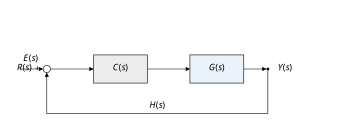
图 37-2 把四类典型环节的阶跃响应画在一起。比例环节瞬间到位但有差；积分环节匀速爬升、无差但慢；一阶惯性平滑趋近、无超调；二阶振荡快速但有超调与振荡。后面所有章节的分析，都是在这四条曲线之间做加减法。
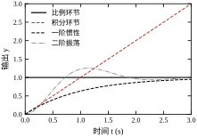
本章按“解析式—连续设计—离散实现—稳定性—参数—调参—改进—落地”推进：§37.2 给出一阶、二阶与延迟的解析解；§37.3 把它固化成六步设计流程；§37.4、§37.5 分别在连续域和离散域把指标算准；§37.6 讨论指标与稳定性的关系；§37.7、§37.8 讲参数怎么影响指标、现场怎么调；§37.9 给出几种不改结构的改进手段；§37.10 落到现场测试与验收；§37.11 说明这套指标的边界；§37.12 给出可复现代码。
如果只能记住一句话：指标不是越多越好，选两三个能反映工艺要求的作为设计目标，其余作为约束；先把模型阶次选对，再谈参数。
不同读者可以走不同路径：只关心验收与合同的，读 §37.1、§37.2.2、§37.10；要上手调参的，读 §37.3、§37.7、§37.8；要做二次开发或写论文的，读 §37.2、§37.4–§37.6、§37.9、§37.11。三条路径都以 §37.12 的脚本为落点——不跑一遍代码，前两条路径上的数都只是别人的数。
概念讲完，先看三个反例。它们都不是“公式算错”，而是“口径或前提没对齐”，也是本章后面反复要防的坑。
反例一：同一份合同，两种口径。 某项目要求“上升时间不大于 0.3 s、调节时间不大于 0.5 s”。乙方按 10%→90% 与 ±2% 带测量，交付时给出 t_r=0.328 s、t_s=0.471 s，两项都合格；甲方用 0→100% 与“首次进入 ±2% 带”复测，得到 t_r=0.484 s、t_s=0.471 s，判定上升时间超标 61%。以 \zeta=0.5、\omega_n=5 rad/s 的系统为例，0→100% 的首次到达时刻是 0.484 s，10%→90% 只有 0.328 s，两者相差 47%；调节时间若按“首次进入”算是 0.471 s，按“最后越出”算是 1.616 s，差 3.4 倍。指标不带口径，等于没写；验收文件里必须把测量方法、误差带、稳态值取法一起写死。
反例二：仿真合格，现场余量被吃掉。 §37.4.7 的位置环在仿真里 M_p=2.97\%、t_r=0.180 s、t_s=0.457 s，控制量峰值 13.4。工程师按此交付，现场驱动器限幅只有 \pm5；重新仿真得 M_p=2.70\%、t_r=0.198 s、t_s=0.491 s。超调反而略降，两项时间指标只退化 7%–10%，看起来“还行”；但若合同写的是 t_s\le0.46 s，这一版已经不合格。更麻烦的是，限幅把加速段削平后，系统对负载变化更敏感，下一次加重负载就可能越过验收线。看指标必须同时看控制量与限幅余量，这是 §37.10 要展开的第一条工程纪律。
反例三：忽略 50 ms 延迟。 某回路在实验室测得的超调 35%、调节时间 3.5 s，工程师认为“延迟只有 50 ms，相对上升时间 0.42 s 不到 12%，可以忽略”。装到现场后，超调变成 47%、调节时间 5.3 s，怎么调增益都不对。按 §37.7.6 的折算，50 ms 延迟在 2.86 rad/s 的穿越频率上吃掉 8.2° 相位裕度，原本 34.9° 只剩 26.7°，指标退化正是这个原因。延迟是否能忽略，不看它相对 t_r 的比例，而看它吃掉的相位与剩余裕度。
三个反例指向同一件事：时域指标本身很简单，难的是把“在什么条件下、按什么口径、测哪个信号”这三件事固定下来。本章后续所有公式，都建立在这三件事已经固定的前提上。
本节把“曲线长什么样”变成“公式能算出什么”。只推三类对象：一阶、二阶、带纯延迟的一阶/二阶。理由在 §37.1.3 已说明：高阶对象在主导极点近似下，最终都会退化成这三类。
一阶环节的微分方程与传递函数为
T\dot{y}(t)+y(t)=K u(t),\qquad G(s)=\frac{K}{Ts+1} \tag{37-1}
其中 K 是直流增益（量纲为输出/输入），T 是时间常数（单位 s）。在单位阶跃 u(t)=1(t)、零初始条件下，解为
y(t)=K\left(1-\mathrm{e}^{-t/T}\right) \tag{37-2}
对式 (37-2) 求导可得 \dot{y}(0)=K/T，即初始斜率只由 K/T 决定；这也解释了一个常见现象：把时间常数减小一半，起始响应陡一倍，但最终值不变。
三个常用结论可直接由式 (37-2) 解出：
这三条之外，现场还有两种读 T 的办法，各有适用场合。其一是面积法：把响应与稳态值之间的“缺口”积分，即 T=\int_0^{\infty}[1-y(t)/K]\,\mathrm{d}t。它对噪声不敏感——积分本身就是一个低通滤波器，几百个采样点的随机误差会相互抵消；缺点是必须知道 K，且要把积分截到尾段（截到 5T 时残余面积只有 0.7%）。其二是切线法：在 t=0 处作斜率 K/T 的切线，它与 y=K 的交点横坐标就是 T。切线法只需两点，但斜率对噪声的方差最大，实测中常因一个毛刺把 T 算小一半，只适合在干净信号上做粗估。
还有一句工程口头禅需要澄清：“四个时间常数就稳了”。4 个 T 对应的残差是 e^{-4}=1.83\%，恰好压进 ±2% 带，所以这句话对应的是 2% 口径；若验收用 ±5%，3 个 T 就够（残差 4.98%）。两个口径差了整整一个时间常数，在 T=2 s 的慢对象上就是 2 s 的差别，足以决定一台设备“合格”还是“不合格”。
表 37-2 给出本书仿真值与解析值的对照（对象取 K=1）。三个时间常数下，比例关系严格成立，这也是判断“对象是否真是一阶”的一个快速检验：若实测 t_r/T 明显偏离 2.2，说明模型里还有别的动态。
| 时间常数 T (s) | t_r 仿真 (s) | 2.20T | t_s 仿真 (s) | 3.91T |
|---|---|---|---|---|
| 0.5 | 1.097 | 1.100 | 1.947 | 1.955 |
| 1.0 | 2.194 | 2.200 | 3.895 | 3.910 |
| 2.0 | 4.388 | 4.400 | 7.789 | 7.820 |
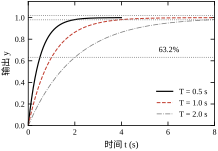
标准二阶环节写成
G(s)=\frac{\omega_n^2}{s^2+2\zeta\omega_n s+\omega_n^2} \tag{37-3}
其中 \omega_n 是无阻尼自然频率（rad/s），\zeta 是阻尼比（无量纲）。极点为
s_{1,2}=-\zeta\omega_n\pm \mathrm{j}\omega_n\sqrt{1-\zeta^2} \tag{37-4}
极点实部决定衰减快慢，虚部决定振荡频率。按 \zeta 的取值分三种情形：
欠阻尼下的单位阶跃响应为
y(t)=1-\mathrm{e}^{-\zeta\omega_n t}\left(\cos\omega_d t+\frac{\zeta}{\sqrt{1-\zeta^2}}\sin\omega_d t\right), \qquad \omega_d=\omega_n\sqrt{1-\zeta^2} \tag{37-5}
对式 (37-5) 求导可以看清两个指标的来源。记 \omega_d=\omega_n\sqrt{1-\zeta^2}，则
\frac{\mathrm{d}y}{\mathrm{d}t}=\frac{\omega_n^2}{\omega_d}\,\mathrm{e}^{-\zeta\omega_n t}\sin\omega_d t
导数只在 \omega_dt=k\pi 处为零，第一个极值出现在 t_p=\pi/\omega_d。代回式 (37-5)，此时 \cos\pi=-1、\sin\pi=0，得
y(t_p)=1+\mathrm{e}^{-\zeta\pi/\sqrt{1-\zeta^2}}
于是 M_p=\mathrm{e}^{-\zeta\pi/\sqrt{1-\zeta^2}}。这两步推出两个重要事实：t_p 只由 \omega_d 决定，M_p 只由 \zeta 决定、与 \omega_n 无关。这就是“阻尼比定形状、自然频率定快慢”的数学来源，也是 §37.4 反解参数时能分开算的依据。
由式 (37-5) 对 t 求极值，可得三个关键结论：
M_p=\exp\left(-\frac{\pi\zeta}{\sqrt{1-\zeta^2}}\right)\times 100\%, \qquad t_p=\frac{\pi}{\omega_d}, \qquad t_s\approx\frac{4}{\zeta\omega_n} \tag{37-6}
t_s 的 4 来自 e^{-4}\approx 0.018，即 ±2% 带；若用 ±5% 带，系数换成 3。上升时间最容易出错，因为教科书上有两个不同口径的公式。常见的那一个是 0→100% 上升时间：
t_{r,0\to100\%}\approx\frac{\pi-\arccos\zeta}{\omega_d}
本书与工业验收用的是 10%→90%，两者不是一回事。以 \zeta=0.4、\omega_n=3 rad/s 为例，上式给出 0.721 s，而实测 10%→90% 是 0.488 s，相差 48%。把前者填进验收表，会把自己的系统判慢将近一倍。10%→90% 的常用拟合为
t_r\approx\frac{1.76\zeta^3-0.417\zeta^2+1.039\zeta+1}{\omega_n} \tag{37-7}
式 (37-7) 在 \zeta\in[0.1,0.9] 内误差小于 2%，本书全部解析估算都用它。
把这组参数完整算一遍，可以看清四个指标各自的来源。\zeta=0.4、\omega_n=3 时极点为 -1.2\pm\mathrm{j}2.75：实部 1.2 决定衰减，虚部 2.75 决定振荡。四项手算结果为 M_p=25.4\%、t_p=\pi/2.75=1.143 s、t_r=0.487 s、t_s=4/1.2=3.33 s。仿真给出 25.38%、1.142 s、0.488 s、2.80 s——前三项几乎逐位吻合，只有 t_s 短了 16%。原因在 t_s 的定义：4/(\zeta\omega_n) 是按包络算的上界，而“最后一次越出”看的是实际波形；第二个极值（向下的谷）在 2.28 s 处还有 -7\%，响应回到带内的时刻是 2.80 s，比包络估计早。这个偏差随 \zeta 变化，\zeta=0.5、\omega_n=5 时两者只差 1%（表 37-3 的 1.617 s 与 1.6 s）。所以 t_s 的公式只能当“上界”，不能当“精确值”。
表 37-3 是 \omega_n=5 rad/s 时本书仿真脚本的输出，解析与仿真的超调列几乎逐位吻合，验证了式 (37-6) 的实现无误。
| \zeta | M_p 仿真 (%) | M_p 解析 (%) | t_r (s) | t_p (s) | t_s (s) |
|---|---|---|---|---|---|
| 0.1 | 72.92 | 72.92 | 0.221 | 0.634 | 7.683 |
| 0.2 | 52.66 | 52.66 | 0.241 | 0.640 | 3.921 |
| 0.3 | 37.21 | 37.23 | 0.264 | 0.658 | 2.247 |
| 0.5 | 16.30 | 16.30 | 0.328 | 0.726 | 1.617 |
| 0.707 | 4.33 | 4.33 | 0.430 | 0.888 | 1.194 |
| 1.0 | 0 | 0 | 0.672 | — | 1.168 |
| 1.5 | 0 | 0 | 1.172 | — | 2.131 |
从表中可以读出两条工程直觉。第一，超调只由 \zeta 决定，与 \omega_n 无关；想让超调从 37% 降到 16%，只需把 \zeta 从 0.3 提到 0.5，不必改 \omega_n。第二，快慢由 \zeta\omega_n 共同决定，\omega_n 加倍可让 t_r、t_s 近似减半，但超调不变。
第一处是稳态值怎么取。式 (37-6) 中的 M_p 以稳态值为基准，而仿真中若在响应尚未衰减完时截断，末段均值会偏离真值。本书 step_metrics 取最后 1% 数据的均值，并要求仿真时长不少于 10/(\zeta\omega_n)；\zeta=0.1 时若仍用 6 s 窗口，超调会被算成 69.6%，与解析值差 3 个百分点，原因就是残余振荡污染了稳态估计。
第二处是上升时间的定义。0→100% 口径对欠阻尼系统无定义（响应可能永远达不到第一个 100%），因此工业界统一用 10%→90%；但对过阻尼系统，10%→90% 会低估“起步慢”的问题，此时可补充“延迟时间 t_d（0→50%）”。
第三处是调节时间的判据。±2% 与 ±5% 两条带在小阻尼下能差一倍。更严格的做法是同时给出“最后一次越界时刻”与“此后是否单调”，本书的 settling_time 采用前者，并在噪声工况下配合平滑后再判。
第四处是基准取谁。M_p 的定义基准是实际稳态值，不是参考值。对 0 型对象，两者差一个稳态误差，结果可以差很多。取 G=10/(0.2s^2+1.2s+1)、单位反馈，闭环稳态 0.909、峰值 1.136：以稳态为基准 M_p=24.92\%，以参考值 1.0 为基准只有 13.56%，差了 11.4 个百分点，几乎把超调砍掉一半。不少报表直接算“峰值减 1”，遇到有静差的回路就会系统性低估。校验方法很简单：把 e_{ss} 加回去，看 M_p 与 (y_{\mathrm{peak}}-y_\infty)/y_\infty 是否一致。
设闭环极点按实部从大到小排列，若存在一个极点 p_1 满足
\left|\mathrm{Re}(p_1)\right|\le 0.1\left|\mathrm{Re}(p_i)\right|,\qquad i=2,\dots,n \tag{37-8}
则其余极点对应的模态在 t_s 时刻已衰减到 e^{-10}\approx 5\times10^{-5}，可忽略。此时高阶系统可降阶为一阶或二阶，直接用 §37.2.1、§37.2.2 的公式估算指标。
但“可降阶”只说明模态会衰减，没说明衰减不完的那一小截对指标有多大影响。式 (37-8) 的 0.1 判据是充分条件，工程上大量对象的分离比落在 0.1 到 0.3 之间，按它降阶到底能信几分，需要实测。取四个常见对象，单位反馈，把真实闭环响应与“按主导极点构造的等效二阶”（同 \zeta、同 \omega_n，超调与时间指标对增益缩放不敏感，故不必对齐直流增益）逐项对比，结果见表 37-4。四个对象的分离比都在 0.16–0.25，即次主导极点只比主极点快 4–6 倍，全部不满足式 (37-8)。
表 37-4 主导极点降阶的误差（单位反馈，等效二阶取同 \zeta、\omega_n）
| 对象 | 分离比 | \zeta / \omega_n | 实际 M_p / t_r / t_s | 等效二阶 M_p / t_r / t_s | 偏差 M_p / t_r / t_s |
|---|---|---|---|---|---|
| \dfrac{1}{(s+1)^3} | 0.250 | 0.500 / 1.000 | 13.91% / 1.872 / 8.396 | 16.30% / 1.638 / 8.081 | -2.4 个百分点 / +14\% / +4\% |
| \dfrac{2}{(s+1)^3} | 0.164 | 0.321 / 1.152 | 29.86% / 1.350 / 10.071 | 34.46% / 1.171 / 9.691 | -4.6 个百分点 / +15\% / +4\% |
| \dfrac{10}{(s+1)(s+2)(s+5)} | 0.214 | 0.634 / 1.889 | 7.05% / 1.096 / 3.365 | 7.59% / 1.027 / 3.175 | -0.5 个百分点 / +7\% / +6\% |
| \dfrac{1}{(s+1)^4} | 0.172 | 0.383 / 0.765 | 23.73% / 2.207 / 12.012 | 27.22% / 1.877 / 13.497 | -3.5 个百分点 / +18\% / -11\% |
三列偏差的方向并不一致，这比“误差 10% 以内”一句话有用得多。
第一，超调一律被高估，四个算例高出 0.5 到 4.6 个百分点（相对偏差 7%–15%）。原因不是附加极点“多了一个衰减模态”这么简单：附加极点同时压低了振荡模态在响应里的权重（留数）。等效二阶把全部权重都给了那对复极点，等于让振荡以最大幅度发挥；真实系统里，快速极点分走了一部分“推力”，于是冲得更低。所以降阶算出的 M_p 是上界，偏保守——按它签合同，现场不会打脸。
第二，上升时间一律被低估，短了 7%–18%。附加极点自身要时间建立，起步阶段比纯二阶慢半拍，这段滞后无法用 \zeta、\omega_n 表达。于是出现一个危险组合：超调偏保守、上升时间偏乐观。如果验收卡的是“t_r\le0.5 s”，按降阶算合格、实测超标完全可能；卡超调则相反，降阶估算是安全的。写指标时必须知道自己在用哪一侧的偏差。
第三，调节时间最稳，偏差落在 -11\% 到 +6\%。因为 t_s 主要由主极点的实部决定，附加极点衰减得比它快，越到后段越不起作用。但 1/(s+1)^4 这一行是反例：两对复极点的分离比只有 0.172，实际 t_s 比预测短 11%。第二对极点虽然衰减快，其振荡相位与主模态叠加，反而更早把响应按进 \pm2\% 带。可见 t_s 的偏差没有固定符号，只能当量级。
据此给出三条使用规则，本章后续所有“解析值 vs 仿真值”的对照都按这三条标注口径：
降阶时还有两个例外必须保留：右半平面零点和纯延迟。前者造成反向起始（undershoot），后者造成相位滞后，二者都不能被“快极点”掩盖，也不能靠调 \zeta 补偿。第 39–41 章会用频域方法处理它们；届时用相位裕度反推阻尼比，本质上仍是同一种二阶近似，本节关于偏差方向的结论可以直接搬过去。本章只做时域近似。
纯延迟环节 e^{-\tau s} 在时域上就是把响应整体右移 \tau：
y(t)=y_0(t-\tau) \tag{37-9}
它不改变超调、不改变稳态值，但等量增加上升时间与调节时间。频域上它贡献相位滞后 -\omega\tau（弧度），在 \omega 处折算为 57.3\omega\tau 度。这个相位损失不衰减，是延迟最难对付的地方——增益再大也补不回来，只能降增益或加前馈/预估（见第 47 章 Smith 预估）。
为便于时域仿真，常用 Padé 有理近似：
\mathrm{e}^{-\tau s}\approx\frac{1-\tau s/2+\tau^2s^2/12}{1+\tau s/2+\tau^2s^2/12} \tag{37-10}
式 (37-10) 为二阶 Padé。这里有个常被写错的细节：Padé 近似是全通的，分子分母互为镜像，所以 |H(\mathrm{j}\omega)|\equiv1，幅频误差为零，误差全部落在相位上。把“幅频误差小于 0.5 dB”写进文档是错的。真实的相位误差见表 37-5，其中 \omega\tau 是无量纲频率，乘上 \tau 才是 rad/s。
表 37-5 Padé 近似的相位误差（相对真延迟，单位：度）
| \omega\tau | 一阶 | 二阶 | 三阶 |
|---|---|---|---|
| 0.5 | 0.58 | 0.00 | 0.00 |
| 1.0 | 4.17 | 0.07 | 0.00 |
| 2.0 | 24.59 | 1.97 | 0.06 |
| 3.0 | 59.27 | 10.81 | 0.86 |
| 5.0 | 150.08 | 59.62 | 14.87 |
选阶的依据就清楚了：若关心的是穿越频率附近的相位，就要求 \omega_c\tau 落在表头对应的区间。\omega_c\tau\le1 用一阶（误差 4°）、\le2 用二阶（2°）、\le3 用三阶（0.9°）。超过 3 还硬用低阶近似，误差会比要研究的相位裕度还大——此时不是“近似不准”，而是“结论已经反了”。
还有一条必须记住：Padé 近似会引入右半平面零点，它带来的反向起始是近似产物，原系统并没有。所以“近似后闭环稳定”不等于“原系统稳定”，判断临界稳定时必须改用精确延迟。本书 simlib.simulate_discrete 的 delay_steps 参数走的是 FIFO 队列，没有近似误差，代价是延迟必须是采样周期的整数倍。
这个“整数倍”又带来第二层误差：延迟量化。设真实延迟 \tau=0.13 s、T_s=0.02 s，\tau/T_s=6.5 拍，实现只能取 6 拍（0.12 s）或 7 拍（0.14 s），误差 \pm0.01 s。这 10 ms 在 \omega_c=2.86 rad/s 的慢回路上只折合 1.6°，可以忽略；但在 \omega_c=11.5 rad/s 的快回路上是 6.6°，相当于把相位裕度从 66° 打到 59°。同一条延迟，在快回路里必须当成一个需要测量的参数，在慢回路里可以当成常数。若延迟确实不是采样周期的整数倍，工程上可用线性插值或一阶全通滤波实现“小数拍”，代价是引入额外的高频衰减。
时域指标里唯一与“最终停在哪”有关的是稳态误差。对单位反馈系统，
e_{ss}=\lim_{s\to0}s\cdot\frac{1}{1+G(s)}\cdot\frac{1}{s}=\frac{1}{1+G(0)} \tag{37-11}
由此得到熟知的结论：0 型系统（G(0) 有限）跟踪阶跃有差，误差为 1/(1+K_p)；I 型系统（含一个积分）跟踪阶跃无差，跟踪斜坡有差；II 型系统跟踪斜坡无差。完整的误差系数表与计算见第 42 章，本章只需记住：超调与快速性由动态决定，稳态误差由型别与开环增益决定，两者要分开设计。
把这句话展开，就是三个位置误差系数：
K_p=\lim_{s\to0}G(s),\qquad K_v=\lim_{s\to0}sG(s),\qquad K_a=\lim_{s\to0}s^2G(s)
三者分别对应阶跃、斜坡、抛物线输入。型别每升高一阶，就多一个积分环节，也多消耗 90° 相位——这正是“无差”要付的代价，§37.6 会看到它对稳定裕度的影响。三种型别与三类输入的组合如下表。
| 系统型别 | 阶跃 1(t) | 斜坡 t | 抛物线 t^2/2 |
|---|---|---|---|
| 0 型 | 1/(1+K_p) | \infty | \infty |
| I 型 | 0 | 1/K_v | \infty |
| II 型 | 0 | 0 | 1/K_a |
表中“\infty”不是数学上的无穷大，而是“误差随时间线性或二次增长，永远进不了允许带”。工程上遇到这种组合，唯一的出路是升型（加积分）或改用前馈，靠调增益是调不出来的。
算例一（0 型，阶跃有差）。 G(s)=10/(s+1)，单位反馈，K_p=10，e_{ss}=1/11=9.09\%。若要求 e_{ss}\le2\%，需 K_p\ge49，即把增益提高到近 5 倍。但增益一提高，闭环极点从 -11 移到 -50，响应变快、抗噪变差；若对象本身还有延迟，5 倍增益很可能直接把系统推到稳定边界外。这就是“消差”与“稳”的第一处冲突。
算例二（I 型，斜坡有差）。 本章统一算例 G_0(s)=10/[s(s+2)]，K_v=\lim sG_0=5，跟踪单位斜坡的稳态误差为 0.2。比例系数取 0.5、1、2 时，理论误差分别为 0.4、0.2、0.1；用 30 s 仿真量得的末值误差为 0.4000、0.2000、0.1000，与理论完全一致。注意这里的误差不随时间是“衰减到零”，而是一个常数偏置——斜坡一直在跑，系统只能以固定落后的方式跟上。这一点常被误解为“还没调好”，其实是 I 型系统跟踪斜坡的固有形态。
算例三（II 型，抛物线有差）。 G(s)=10(s+1)/[s^2(s+2)]，K_a=\lim s^2G=5，跟踪 t^2/2 的误差为 0.2。II 型系统对阶跃和斜坡都无差，代价是两个积分带来的 180° 相位，闭环阻尼很难做高：同样的比例增益下，II 型系统的超调普遍比 I 型大，调参空间更窄。
还有一类误差不体现在型别表里：输入端扰动。设扰动 d 阶跃加在对象输入端，参考保持不变，则稳态输出为
y(\infty)=\frac{G(0)}{1+C(0)G(0)}\,d+\frac{C(0)G(0)}{1+C(0)G(0)}\,r
由闭环关系 y=G(d+u)、u=C(r-y) 即可解出。若 G(0)\to\infty（对象含积分），第一项的极限为 d/C(0)、第二项为 r，于是 y(\infty)=r+d/C(0)，稳态偏差为 -d/C(0)。取 d=0.1、C=1 时偏差 -0.1，C=2 时 -0.05；只有控制器本身含积分（C(0)\to\infty）才能把输入扰动压到零。这条结论比型别表更实用：参考跟踪的型别看 G，扰动抑制的型别看 C。 很多现场“给定跟得很准、一加负载就掉下来”的现象，根源就是控制器只有比例项。
最后强调两个口径问题。其一，式 (37-11) 只在闭环稳定时成立；不稳定系统的“稳态误差”没有意义，仿真里看到的末值只是发散曲线被窗口截断的结果。其二，稳态误差是 r-y 的极限，符号由定义决定，写验收文件时必须注明“以给定减输出为正”，否则同一组数据会被两方读出相反的结论。
设计顺序由此确定：先按“要不要无差”定型别（结构问题），再按“允许多大误差”定增益（数值问题），最后才校核超调与调节时间（动态问题）。反过来先调动态、再补误差，往往要把已经调好的参数全部推翻。
本节把 §37.2 的公式整理成一条可重复执行的流程。流程的价值不在于步骤本身，而在于每一步都有明确的输入、判据与退出条件，避免“调一调、看一看”的黑箱试错。
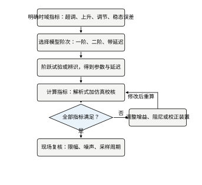
六步依次是：
流程中唯一允许“跳过”的是第 3 步——已有可靠模型时可直接用；其余五步不能省。现场最常见的失败是跳过第 1 步和第 6 步：指标口径没定，验收时各说各话；实验室调好了不上现场复核，一加限幅就变样。
工艺给的是“到位快、不许撞、不能抖”，需要翻译成三个数。翻译规则如下：
三个数之间可能冲突。此时按“安全 > 精度 > 节拍”排序：先保证不撞、不抖，再压缩时间。反过来做，往往要在结构上返工。
翻译环节有三个高频误译，都会把后面的设计带偏。
误译一：把“到位快”译成上升时间。 节拍由“指令发出到可以动作下一步”决定，对应的是调节时间，不是上升时间。本章设计 t_r=0.181 s、t_s=0.468 s，若按 t_r 报价“0.2 s 到位”，现场实测会慢 2.6 倍。上升时间只是形状的辅助量，验收永远看 t_s。
误译二：把“不许撞”译成超调。 超调是相对目标点的过冲，撞不撞取决于目标点到行程端点的余量。M_p=5\% 在 10 mm 行程上是 0.5 mm 过冲；若目标点距端点只有 0.3 mm，这 0.5 mm 照样撞上去。所以“不撞”要译成软限位余量 + 超调上限两个数，只写超调是不够的。
误译三：把“不能抖”译成稳态误差。 稳态误差描述的是静态偏置，抖动是持续的往复运动，两者成因不同：前者来自死区与型别（死区 0.1 留下 9.3% 偏置），后者来自摩擦爬行、量化极限环或积分器与延迟的组合。用 e_{ss} 验收抖动，会出现“误差合格、机器还在响”的局面。
三句话可以概括：快看 t_s、撞看余量、抖看峰峰值。 把这三项分开写进技术协议，后面的设计与验收才有共同语言。
定阶不看对象有多复杂，只看阶跃响应长什么样：
| 响应特征 | 推荐模型 | 参数 | 依据 |
|---|---|---|---|
| 单调上升、无超调、起始斜率有限 | 一阶 K/(Ts+1) | K,T | 响应形状与式 (37-2) 一致 |
| 有超调、等幅或衰减振荡 | 二阶 \omega_n^2/(s^2+2\zeta\omega_n s+\omega_n^2) | K,\zeta,\omega_n | 振荡周期给 \omega_d，衰减给 \zeta |
| 起始一段时间完全不动，之后才响应 | 一阶/二阶加纯延迟 | 加 \tau | 死区时间明显大于时间常数 |
| 有反向起始（先往反方向动） | 含右半平面零点 | 加零点 | 见第 41 章 |
| 多段斜率、多个拐点 | 三阶以上或分段 | 辨识 | 见第 17–24 章 |
一个实用判据：若阶跃响应从 10% 到 90% 的曲线可用一条指数逼近（在半对数坐标上近似直线），用一阶；若明显呈 S 形且伴随振荡，用二阶；若前 5%–10% 的时间里输出几乎为零，必须加延迟，否则后续所有频域设计都会偏乐观。
阶跃试验是最便宜的参数来源，但要注意四条：
若不允许做阶跃（如高温、高压、连续生产流程），改用伪随机二进制序列（PRBS）或继电反馈，方法见第 17、23 章。
拿到曲线之后，参数怎么读，取决于定阶结果。
一阶（含延迟）用两点法。 量两个时刻：输出达到稳态值 28.3% 的 t_1 与 63.2% 的 t_2。对 y=K[1-\mathrm{e}^{-(t-\tau)/T}]，28.3\% 对应 (t-\tau)/T=1/3，63.2\% 对应 (t-\tau)/T=1，两式相减得
T=1.5\,(t_2-t_1),\qquad \tau=t_2-T
选这两点不是随意：它们相隔 2T/3，既避开了起始的平缓段，也不在峰值附近；而且两点比例固定，只依赖曲线形状，与 K 的真值无关。单点法（直接取 63.2% 时刻）必须先知道稳态值，K 估偏 5% 会让 T 偏 5%–8%，现场往往拿不准稳态值。
用真值 T=0.5 s、\tau=0.1 s、K=1 的对象验证：仿真量得 t_1=0.266 s、t_2=0.600 s，反演得 T=0.500 s、\tau=0.100 s，与真值吻合到小数点后三位。叠加 1% 噪声并做 20 点滑动平均后，三次试验得 T=0.499/0.501/0.504 s、\tau=0.100/0.099/0.098 s，分散度在 1% 以内。这说明两点法在噪声下的稳定性足够工程使用。
二阶先取 \zeta 再取 \omega_n。 超调直接给 \zeta（式 37-6 反解或查表 37-3），峰值时间给 \omega_d=\pi/t_p，于是 \omega_n=\omega_d/\sqrt{1-\zeta^2}。以 \zeta=0.4、\omega_n=5 rad/s 为例，理论值 M_p=25.4\%、t_p=0.686 s；若从图上读得这两个数，反演得 \zeta=0.400、\omega_n=5.00，误差都在 0.1% 以内。若 t_p 读大 5%（0.720 s），反演 \omega_n=4.77 rad/s，偏低 4.6%——t_p 的读数误差会等比例传到 \omega_n，因此峰值附近要加密采样。
切线法要谨慎。 过响应起点作最大斜率切线，与稳态线交于 t=\tau+T、与时间轴交于 t=\tau。这个方法在教科书上很常见，现场却容易出错：最大斜率由差分求得，噪声一大位置就飘；采样不足时斜率被低估，T 随之偏小，实测常偏小 10%–20%。只在曲线干净、采样率高于带宽 20 倍时使用。
面积法抗噪最好。 对一阶加延迟对象，稳态线与响应之间的面积满足 A=\int_0^\infty[K-y(t)]\,\mathrm{d}t=K(T+\tau)，与 t_2=\tau+T 联立即可分开解出 T 与 \tau。积分本身平滑噪声，但要求记录窗口不短于 5T+\tau，且 K 必须准。它适合温度、液位这类慢过程，不适合快速伺服。
三条禁忌。 其一，不要用闭环数据辨识开环模型——反馈会把对象动态“压平”，辨识出的参数反映的是闭环带宽，直接代入式 (37-6) 会系统性低估超调。其二，不要在饱和区做试验——限幅使等效增益下降，K 偏小、T 偏大，据此整定的控制器在现场必然过冲。其三，不要只截取上升段——稳态值决定 K 与型别，缺了末段既算不出 M_p，也判断不了对象含不含积分。
最后，辨识结果要连同试验条件（幅值、负载、温度、采样周期）一起归档。否则三个月后没人能解释“同一台设备两次辨识结果差 20%”。
拿到参数后，按以下顺序估算：
五条线重合，说明模型与实现都干净；只有解析与仿真重合、另三条分叉，说明问题出在工程细节而非模型；解析与仿真都不重合，回去查定阶与参数。
这套顺序不能省，因为“算”与“仿”的差距常常大到出乎意料。以 §37.3.4 辨识出的 G(s)=\mathrm{e}^{-0.1s}/(0.5s+1) 为例，配 PI 控制器 K_p=1.0、T_i=0.25 s，按上面的顺序走一遍。
第一步，只算极点。 忽略零点与延迟时，闭环特征式为 0.125s^2+0.5s+1=0，即 s^2+4s+8=0，得 \omega_n=2.83 rad/s、\zeta=0.707，按式 (37-6)、式 (37-7) 估得 M_p=4.3\%、t_r=0.759 s、t_s=1.95 s。
第二步，把 PI 的零点算进去。 C(s)=K_p(T_is+1)/(T_is) 的零点在 -1/T_i=-4，主导极点为 -2\pm\mathrm{j}2，零点与极点实部之比 \rho=2.0。按 §37.4.3 的判据，这属于“会抬高超调但不至于反相”的区间。仿真（不含延迟）给出 M_p=6.70\%、t_r=0.562 s、t_s=1.866 s：超调多 2.4 个百分点，上升时间却短了 26%。零点把响应“往前拽”，对 t_r 是好事，对 M_p 是坏事，两个指标的偏差方向相反。
第三步，加上 0.1 s 延迟。 实测 M_p=14.05\%、t_r=0.413 s、t_s=1.732 s。超调再涨 7.4 个百分点，t_r 再短 27%，t_s 反而从 1.87 s 降到 1.73 s——延迟与零点一起把响应“往前推”，代价全部由超调承担。
三步走完，预测值 4.3% 只有实测 14.1% 的三分之一。误差的账很清楚：零点 +2.4 个百分点，延迟 +7.4 个百分点。极点公式给出的是下界，不是估计值；拿它签合同，现场必然翻车。这就是第 4 步“先算”只能定初值、第 5 步“后仿”才能定结论的原因。反过来，若仿真的三条曲线（带限幅、带噪声、带采样）都与理想仿真分叉，而理想仿真又与解析吻合，说明模型没错，问题全在实现细节——排查方向立刻清楚。
判定用一张表，逐项打勾，不允许“总体感觉差不多”。示例见表 37-6。
表 37-6 指标判定表
| 项 | 目标 | 仿真值 | 现场值 | 判定 |
|---|---|---|---|---|
| 超调 M_p | ≤ 5% | 4.8% | 6.1% | 不合格 |
| 上升 t_r | ≤ 0.10 s | 0.09 s | 0.11 s | 不合格 |
| 调节 t_s | ≤ 0.22 s | 0.20 s | 0.31 s | 不合格 |
| 稳态误差 | ≤ 0.2% | 0.0% | 0.4% | 不合格 |
四项全不合格而仿真全合格，典型原因是现场存在未建模的延迟与死区，应按 §37.10 的顺序排查，而不是继续在仿真里调参数。
四项同时不合格时，先修哪一项不是随机的，要按“影响面”排序：
表 37-6 属于第二类，先测延迟与死区通常能一次解释 3–4 项偏差。反过来，如果上来就调参数，会把仿真里那个合格点也弄丢，最后连对照基线都没有了。
五条里破坏力最大的是第 2 条和第 4 条，因为它们不报错，只会给出一个“看起来正常”的数。
第 2 条的量级可以算：\zeta=0.4、\omega_n=3 rad/s 时，0→100% 口径的上升时间是 0.721 s，10%→90% 口径是 0.488 s，差 48%。两种口径一旦混用，按 0.72 s 验收会把一批合格品判成不合格，反过来则把不合格判成合格——同一批数据，两种结论。
第 4 条更隐蔽：限幅 \pm0.6 时 t_r 从 0.418 s 变成 0.497 s、M_p 从 37.2% 变成 32.8%，两项都“变好看了”，但这是削顶造成的假象，指标会随激励幅值改变，不再是一个常数。测指标前先确认三件事：输出没有削顶、控制量没有长时间贴限幅、判稳窗口覆盖了完整的振荡周期。 三条都满足，测出来的数才配写进验收单。
流程的最后一步是“留下记录”，否则三个月后没人能复现这组参数。以 §37.3.4 的一阶对象为例，一份合格的记录应当包含下面这些内容，而不是只写一句“辨识得 T=0.5 s”。
试验条件：对象编号 A-03，负载空载，油温 25 ℃，给定阶跃 1 V（满量程 10 V 的 10%），采样周期 1 ms，记录时长 5 s。
原始数据：稳态值 y_\infty=0.998（取 4–5 s 均值），28.3% 与 63.2% 两个电平分别为 0.282 与 0.631，对应时刻 t_1=0.266 s、t_2=0.600 s。
计算过程：T=1.5(t_2-t_1)=1.5\times0.334=0.501 s，\tau=t_2-T=0.600-0.501=0.099 s，K=y_\infty/u_0=0.998。
校验：把 T=0.5 s、\tau=0.1 s、K=1 代回模型，在 0–5 s 上逐点与实测比较。合格的标准是最大残差不超过噪声水平（本例约 1% 满量程），且残差不呈现趋势；若残差在起始段偏大，说明延迟估小，若在尾段偏大，说明 T 估小。
重复性：同一条件做三次，得 T=0.499/0.501/0.504 s、\tau=0.100/0.099/0.098 s，分散度小于 1%。
结论与用途：模型 G(s)=1.00\,\mathrm{e}^{-0.10s}/(0.50s+1)，可直接用于 §37.4 的连续设计；若用于离散设计，\tau 在 T_s=1 ms 下正好是 100 拍，可直接用整数拍表示。
这份记录只有六项，但它回答了四个问题：在什么条件下测的、原始数是什么、怎么算的、可不可信。现场交接时，这六项比任何一条“经验参数”都值钱。反过来，只记结果不记条件的记录，等于没有记录——换一台设备、换一个温度，那组参数就不成立了。
连续域是设计的起点：先把指标落到 s 平面的参数上，再考虑离散实现。本节用一个统一的例题贯穿：某伺服轴要求 M_p\le5\%、t_s\le0.5 s；对象已辨识为二阶形式，需要定出 \zeta 与 \omega_n。
先由超调定阻尼比。把 M_p=5\% 代入式 (37-6) 的第一式：
0.05=\exp\left(-\frac{\pi\zeta}{\sqrt{1-\zeta^2}}\right) \;\Longrightarrow\; \zeta=\frac{\left|\ln 0.05\right|}{\sqrt{\pi^2+\left(\ln 0.05\right)^2}}\approx0.690 \tag{37-12}
再由调节时间定自然频率。取 \zeta=0.69、t_s=0.5 s，代入 t_s\approx4/(\zeta\omega_n)：
\omega_n\ge\frac{4}{\zeta t_s}=\frac{4}{0.69\times0.5}\approx11.6\ \mathrm{rad/s} \tag{37-13}
即闭环自然频率不低于 11.6 rad/s（约 1.85 Hz）。这两个数就是后续所有校正装置的靶子：\zeta 决定形状，\omega_n 决定尺度。若对象本身的 \omega_n 只有 5 rad/s，就必须靠增益或超前校正把带宽抬上去，同时保证 \zeta 不掉下来——这正是第 43 章校正装置要解决的问题。
这里有一个容易被忽略的细节：式 (37-13) 用的是 t_s\approx4/(\zeta\omega_n)，而更紧的 2% 带精确式是 t_s\approx3.9/(\zeta\omega_n)，两者差 2.5%。按 11.6 rad/s 设计、实测 0.458 s（§37.4.7），恰好落在两者之间。指标留余量不是保守，而是给公式与仿真的系统性偏差留位置；若把 11.6 当成硬下界、一点余量不留，实测的 0.458 s 会紧贴 0.5 s，任何参数漂移都会判不合格。
图 37-5 把 \zeta=0.2,0.4,0.707,1.0 四条阶跃响应画在一起，横轴统一到 3 s、\omega_n=5 rad/s。可以看到：\zeta=0.2 时冲得很高、回落很慢；\zeta=0.707 时几乎没有超调，上升也还算快；\zeta=1 时完全无超调，但明显变“肉”。工程上常把 \zeta=0.707 称为最佳阻尼，因为它同时兼顾超调（4.3%）与上升时间。
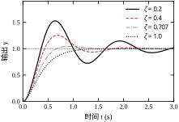
图 37-6 在单条响应上标出 M_p、t_r、t_s 三个量的位置。注意 t_s 是“最后一次越出 ±2% 带”的时刻，不是“第一次进入”的时刻；图中小阻尼情形会出现“进入—越出—再进入”，按第一次进入算会低估 30% 以上。
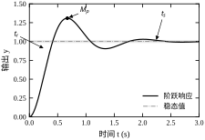
图 37-7 把同一组参数画到 s 平面上。极点到虚轴的投影长度是 \zeta\omega_n，到原点的距离是 \omega_n，与负实轴的夹角 \theta 满足 \cos\theta=\zeta。这三条几何关系是“看图调参”的基础：想让响应快，极点往左移；想减小超调，极点往实轴靠。
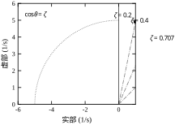
实际对象常带零点。零点不改变极点位置，但会改变各模态的权重，因此对指标的影响可能很大。以 \zeta=0.5、\omega_n=5 的基准系统为例，分别串联 1+as（左半零点）与 1-as（右半零点），保持直流增益为 1，仿真结果见表 37-7。
| 情形 | M_p (%) | t_r (s) | t_s (s) | 反向峰值 |
|---|---|---|---|---|
| 无零点 | 16.30 | 0.328 | 1.616 | 0 |
| 左半零点 a=0.3 | 47.86 | 0.130 | 1.485 | 0 |
| 左半零点 a=0.6 | 119.22 | 0.061 | 1.981 | 0 |
| 右半零点 a=0.3 | 24.58 | 0.220 | 1.858 | −50.7% |
| 右半零点 a=0.6 | 36.94 | 0.159 | 1.959 | −126.6% |
三条结论值得记住：
给一阶对象串一个 0.02 s 的快极点，即 T(s)=1/[(s+1)(0.02s+1)]，仿真得 t_r=2.197 s、t_s=3.934 s；而不加快极点时为 2.197 s 与 3.913 s。上升时间完全不变，调节时间只差 0.5%。原因很简单：快极点的时间常数是被保留极点的 1/50，满足式 (37-8) 的判据，其模态在 0.1 s 内已衰减到可忽略。
这条结论的工程价值在于：不要因为对象是五阶就放弃解析估算。只要快极点满足判据，就可以放心用一阶或二阶公式做初算，再用仿真校核。反过来，若某个极点不满足判据（例如时间常数只差 3 倍），降阶会带来 20% 以上的指标误差，必须保留。
还要提醒一种被“倍率”掩盖的情形：重极点。 两个同样的时间常数 T 串在一起，即 1/(Ts+1)^2，其模态不是 \mathrm{e}^{-t/T} 而是 t\mathrm{e}^{-t/T}。包络要衰减到 2%，需要 t/T\approx5.8；单个极点只需 3.9。也就是说，重极点的“有效距离”要按 1.5 倍折算，5 倍远的判据实际要放宽到 7 倍以上。两个完全相同的容腔、两台同型号电机串联，最容易出现这种情况；此时按单极点公式降阶，t_s 会明显偏短。
延迟最容易犯的错，是把“平移”直接套到闭环上。先分清两种情形。
开环，或延迟只作用在记录通道上：y(t)=y_0(t-\tau) 精确成立，于是
t_r'=t_r+\tau,\qquad t_s'=t_s+\tau,\qquad M_p'=M_p \tag{37-14}
这条式子没有近似，因为它只是把同一条曲线右移。
闭环内（延迟在控制器到对象之间，或测量到控制器之间）就不一样了。特征方程从 1+C(s)G_0(s)=0 变成 1+C(s)G_0(s)\mathrm{e}^{-\tau s}=0，延迟进入的是极点方程，极点在动，形状当然也在变。此时式 (37-14) 只是 \tau\to0 时的一阶近似，不能拿来做验收。
实测最能说明问题。仍取 G_0=10/[s(s+2)]、C=1（\omega_c=2.863 rad/s、\tau_c=0.213 s），用 1 ms 步长的精确延迟把 \tau 从 0 加到 0.15 s：
| \tau (s) | \omega_c\tau | M_p (%) | \Delta M_p (pp) | t_r (s) | t_r 变化 | t_s (s) | t_s/t_{s0} |
|---|---|---|---|---|---|---|---|
| 0 | 0 | 35.19 | — | 0.424 | — | 3.537 | 1.00 |
| 0.005 | 0.014 | 36.23 | +1.0 | 0.421 | −0.7% | 3.551 | 1.00 |
| 0.01 | 0.029 | 37.29 | +2.1 | 0.418 | −1.4% | 3.563 | 1.01 |
| 0.02 | 0.057 | 39.50 | +4.3 | 0.412 | −2.8% | 4.373 | 1.24 |
| 0.03 | 0.086 | 41.81 | +6.6 | 0.406 | −4.2% | 4.460 | 1.26 |
| 0.05 | 0.143 | 46.76 | +11.6 | 0.395 | −6.8% | 5.347 | 1.51 |
| 0.08 | 0.229 | 54.96 | +19.8 | 0.382 | −9.9% | 6.504 | 1.84 |
| 0.10 | 0.286 | 60.92 | +25.7 | 0.375 | −11.6% | 7.616 | 2.15 |
| 0.15 | 0.429 | 77.38 | +42.2 | 0.362 | −14.6% | 16.03 | 4.53 |
三个现象都反直觉。
第一，t_r 不是变长，而是略变短。 延迟把相位裕度吃掉，等效阻尼下降，系统在 10%→90% 这一段冲得更急。所以拿 t_r 判断“延迟大不大”会得到相反的结论：t_r 一路变小，其余指标却全面恶化。
第二，M_p 对延迟最敏感。 \tau=0.05 s 只占上升时间的 12%，超调已经从 35.2% 涨到 46.8%，多出 11.6 个百分点。峰值高度由阻尼决定，而阻尼对相位最敏感，所以延迟的第一笔账总是记在超调上。
第三，t_s 是乘性增长，不是加性增长。 \tau 从 0 到 0.1 s（不到 \tau_c 的一半），t_s 从 3.54 s 涨到 7.62 s，翻了一倍多；式 (37-14) 会预测 3.64 s，方向都错了。原因是延迟把主导极点往虚轴推，t_s\propto1/|\mathrm{Re}\,p| 是放大关系，不是相加关系。而且这种恶化是台阶式的：\tau\le0.03 s 时只涨 26%，到 0.05 s 就变 1.5 倍，到 0.15 s 已是 4.5 倍。
所以“延迟能否忽略”这句话必须分指标回答，不能一句话概括：
现场更稳妥的做法是：只要延迟超过上升时间的 5%，就把 \mathrm{e}^{-\tau s} 显式放进模型做仿真，不要依赖折算公式。§37.6.7 会用频域给出延迟的稳定上限，那里的结论与这张表是同一条曲线的两端。
§37.4.4 的例子说明“远极点可忽略”，但“远”是相对谁而言？把这个问题做成实验：仍取 G_0(s)=10/[s(s+2)]、C=1，闭环主导极点为 -1\pm\mathrm{j}3，实部为 -1。在对象上串一个单位直流增益的极点 p/(s+p)，让 p 从 100 一路降到 5，相当于附加极点距虚轴是主导极点的 100 倍到 5 倍。仿真结果如下。
| 附加极点 | M_p (%) | t_r (s) | t_s (s) | 相对原系统 |
|---|---|---|---|---|
| 无 | 35.09 | 0.4246 | 3.537 | — |
| -100 | 37.18 | 0.4185 | 3.564 | M_p 高 2.1 个百分点，t_s 长 0.8% |
| -50 | 39.33 | 0.4137 | 4.374 | M_p 高 4.2 个百分点，t_s 长 23.7% |
| -20 | 46.05 | 0.4063 | 5.364 | M_p 高 11.0 个百分点，t_s 长 51.6% |
| -10 | 56.99 | 0.4097 | 7.704 | M_p 高 21.9 个百分点，t_s 长 117.8% |
| -5 | 74.49 | 0.4360 | 20.821 | M_p 高 39.4 个百分点，t_s 长 488.6% |
这张表给出的信息比“5 倍远即可”复杂得多。附加极点 -100 时几乎无影响，-50 时超调涨 4.2 个百分点，-5 时超调翻倍、调节时间涨到近 6 倍——而 -5 按“实部 5 倍”的判据本该勉强合格。原因有两个。
第一，极点不只是“衰减快慢”，它还改变回路在穿越频率附近的相位。本章系统的开环穿越频率约 2.86 rad/s，附加极点 -5 在该频率贡献 -\arctan(2.86/5)\approx-30^\circ 相位，把相位裕度从 35° 压到不足 5°，系统自然剧烈振荡。“实部 5 倍”只保证模态衰减快，不保证相位代价小；正确的判据是“附加极点至少在穿越频率的 5–10 倍以外”，即 p\ge(5\sim10)\omega_c，而不是与主导极点比。
第二，t_s 是三个指标里最不稳健的一个。附加极点 -50 时 M_p 只涨 4.2 个百分点、t_r 几乎不变，t_s 却从 3.54 s 跳到 4.37 s。检查仿真窗口与步长可排除数值原因：把窗口从 30 s 拉到 120 s、点数从 2000 加到 40000，t_s 稳定在 4.374 s。真正的原因是轻阻尼系统的包络衰减慢，\pm2\% 带的最后一次穿越落在“包络刚好压线”的区域，主导模态的留数稍有变化，穿越时刻就移动小半个周期。所以判断模型能不能降阶，应主要看 M_p 与 t_r；只看 t_s 容易得出“降阶失败”的错误结论。
工程上的做法是双判据：先用极点实部比做粗筛（\ge5 倍），再用 M_p 的偏差做确认（偏差不超过 2 个百分点）。两条都过才降阶；只过一条时，保留附加极点做一次仿真更稳妥。
把 §37.4.1 的抽象指标落到具体对象上，走一遍完整流程。指标为：M_p\le5\%、t_s\le0.5 s、阶跃无稳态误差；对象仍为 G_0(s)=10/[s(s+2)]。
第一步，由指标定闭环参数。 由 M_p=5\% 反解得 \zeta=0.69；由 t_s\le0.5 s 得 \zeta\omega_n\ge4/0.5=8 rad/s，于是 \omega_n\ge8/0.69=11.6 rad/s。取等号，得目标闭环 s^2+16s+134。
第二步，由闭环参数反解控制器。 比例加微分（标准形式）的闭环特征式为
s^2+(2+10K_pT_d)s+10K_p=0
与目标式逐项对比：10K_p=134 给出 K_p=13.4；2+10K_pT_d=16 给出 T_d=0.1045 s，即 K_d=K_pT_d=1.40。注意这里没有自由度可浪费——两个指标恰好定死两个参数。
第三步，选择微分作用的位置。 若按标准 PD 实现，闭环会多一个零点 z=-1/T_d=-9.57。它与闭环极点 -8.48\pm\mathrm{j}9.25 的距离只有 \rho=9.57/8=1.2，按 §37.9.2 的结论，这个零点会把超调显著抬高。仿真证实：同一组 K_p、T_d 下标准 PD 的 M_p=20.43\%、t_r=0.075 s、t_s=0.399 s，超调超标 4 倍。改用微分先行（只对输出微分，式 37-27），零点消失，闭环回到二阶本体。
第四步，仿真校核。 微分先行加一阶滤波 T_f=0.01 s 后，实测 M_p=2.97\%、t_r=0.180 s、t_s=0.458 s、稳态值 0.99996、控制量峰值 13.8。三项指标全部满足，且留有余量：超调比上限低 2 个百分点，调节时间比上限快 8%。
第五步，检查指标之外的东西。 控制量峰值 13.8 是给定幅值的近 14 倍。若执行器限幅为 \pm10，这个设计在现场会因饱和而变慢，t_s 立刻退化；此时要么降低指标，要么在给定上加斜坡（§37.10.4）。这一步最容易被仿真阶段忽略：control 的线性模型不会饱和，指标永远漂亮。
第六步，看参数敏感性。 固定 K_p=13.4，把 K_d 从 1.4 降到 0.8，超调从 3.0% 涨到 20.4%，t_s 从 0.458 s 涨到 0.702 s；升到 2.0 则超调为 0，但 t_s 反而涨到 0.505 s。这说明 K_d=1.4 位于“刚好压住超调”的拐点上，往任一方向调都有代价：减小失去阻尼，增大变成过阻尼。现场若发现执行器发热，优先小幅降 K_d 并接受超调上升，而不是直接砍 K_p——后者会把带宽一起拉低。
第七步，与纯比例对照。 同样的对象若只用比例，要满足 M_p\le5\% 需 K_p\approx0.21，此时 t_r=1.45 s、t_s=4.14 s，比指标慢 8 倍以上。这组数字说明：在这个对象上，“快”不是靠加大比例买来的，而是靠微分提供的阻尼买来的。比例决定“推多大劲”，微分决定“提不提前收劲”；只有推力没有提前量，系统要么慢，要么振。
最后是采样周期的约束。滤波器时间常数 T_f=0.01 s，按“每 5 个采样点覆盖一个时间常数”的经验，T_s\le2 ms；而 t_r=0.18 s 只要求 T_s\le18 ms。两条取严，T_s 应取 1–2 ms。若控制器只能做到 10 ms，则 T_f 必须相应放大到 0.05 s；按式 (37-28)，\alpha 从 0.096 涨到 0.478，最大相位超前从 55.6° 掉到 20.7°，K_d 要重新整定——这就是“控制周期决定控制结构”的具体含义。
上一节的公式都建立在“控制器连续、输出连续可测”的假设上。真实系统里，控制器每隔 T_s 计算一次，输出经零阶保持器（ZOH）保持一个采样周期。这两件事都会改变指标：前者让指标只能在采样点上定义，后者引入半个采样周期的等效延迟。
连续对象 G(s) 与 ZOH 串联后离散化为 G(z)，数字控制器为 C(z)，闭环脉冲传递函数为
T(z)=\frac{C(z)G(z)}{1+C(z)G(z)} \tag{37-15}
连续极点 s_i 与离散极点 z_i 的关系是 z_i=\mathrm{e}^{s_iT_s}。把 s_i=-\zeta\omega_n\pm\mathrm{j}\omega_n\sqrt{1-\zeta^2} 代入，得
|z_i|=\mathrm{e}^{-\zeta\omega_nT_s},\qquad \angle z_i=\omega_nT_s\sqrt{1-\zeta^2} \tag{37-16}
反过来，由一对共轭极点反算等效阻尼比：
\zeta=\frac{-\ln|z|}{\sqrt{\ln^2|z|+\left(\angle z\right)^2}} \tag{37-17}
式 (37-17) 是离散域“看图调参”的核心：|z| 越接近 1，衰减越慢；\angle z 越大，振荡越快。设计时把极点配置到 |z|=\mathrm{e}^{-4T_s/t_s}、\angle z=\pi T_s/t_p 附近，就能同时满足调节时间与峰值时间。
举一组具体数验证：本章统一算例的连续闭环极点是 -1\pm\mathrm{j}3。取 T_s=20 ms，z=\mathrm{e}^{-0.02}\mathrm{e}^{\pm\mathrm{j}0.06}，即 |z|=0.9802、\angle z=3.44^\circ。代回式 (37-17)，\zeta=0.02/\sqrt{0.02^2+0.06^2}=0.316，与连续域的 0.316 完全一致——只要 T_s 足够小，\mathrm{e}^{sT_s} 映射不丢信息。
采样还会把“快极点”压向原点：s=-20 的模态在 T_s=20 ms 时映到 |z|=0.67，在 100 ms 时映到 0.135。极点越靠近原点，衰减越快，对闭环的影响越小。这给降阶提供了一个离散判据：若某极点映射后 |z|<0.1，它在一个多采样周期内就衰减到 10% 以下，可以放心丢掉。注意它与式 (37-8) 的连续判据只是在 T_s 远小于该模态时间常数时才等价。
零阶保持器不是理想的重构器，它的频率特性为
G_{\mathrm{ZOH}}(\mathrm{j}\omega)=\frac{1-\mathrm{e}^{-\mathrm{j}\omega T_s}}{\mathrm{j}\omega} \approx T_s\,\mathrm{e}^{-\mathrm{j}\omega T_s/2}\cdot\mathrm{sinc}\left(\frac{\omega T_s}{2}\right) \tag{37-18}
在低频段，它近似为“增益 T_s 加半个采样周期的纯延迟”。这半个周期的延迟会吃掉相位裕度，折算到闭环就是超调变大、调节时间变长。工程上常用的补偿办法是：设计连续控制器后，把采样周期的一半计入延迟，再校核一次相位裕度；或者直接用 Tustin 变换，它在低频段的相位特性优于 ZOH（见第 6 章）。
把这笔账算成数：本章设计的 \omega_c=16.0 rad/s，取 T_s=12 ms，半拍 6 ms 带来 16.0\times0.006=0.096 rad，即 5.5° 相位损失；若把采样提到 2 ms，同样折算只有 0.9°。这 4.6° 的差别，在相位裕度只有 30° 的回路里相当于 15% 的裕度，不能忽略。所以“ZOH 只是零阶保持、不引入延迟”这句话是错的：它天然带半个采样周期的延迟，这个延迟不随控制器改进而消失，只能靠提高采样率或改用其他重构方式减小。
采样周期的选择有三条互相印证的经验线：
三条线取最严的一条。以 §37.4.7 的例题为例，t_r=0.180 s，第 1 条给 T_s\le18 ms；开环穿越频率 \omega_c=16.0 rad/s（仿真测得），第 2 条给 T_s\le2\pi/(10\times16.0)=39.3 ms；第 3 条给 T_s\le0.2/16.0=12.5 ms。三条线里最严的是相位损失，取 12 ms。
但这个结论还漏了一个约束：微分滤波。滤波器时间常数 T_f=0.01 s 要求一个时间常数内至少有 5 个采样点，即 T_s\le2 ms，比上面三条线都严十倍。带宽只约束“能不能看清振荡”，滤波器约束“能不能正确算出微分”，后者常被忽略，却是实际工程中真正的瓶颈。若控制器只能跑 10 ms，就必须把 T_f 放大到 0.05 s，接受相位超前从 55.6° 掉到 20.7° 的代价（§37.4.7 末段）。
把三条线与滤波器约束放在一起，可以看到一个规律：纯比例系统按 10–20 倍带宽选 T_s 就够；一旦引入微分，采样周期就要按微分滤波器的 1/5 来选，通常比带宽要求严一个数量级。这也是“加了 D 之后系统反而不稳”的常见原因——不是 K_d 给大了，而是采样太慢，微分算出来的是噪声的差分。
用一个统一算例验证：对象 G_0(s)=10/[s(s+2)]，控制器取纯比例 C=1，改变采样周期，结果见表 37-8。表中“谱半径”指离散闭环极点模的最大值，小于 1 即稳定。
| 采样周期 T_s (s) | M_p (%) | t_r (s) | t_s (s) | 稳态值 | 谱半径 |
|---|---|---|---|---|---|
| 连续 | 35.17 | 0.424 | 3.545 | 0.999 | — |
| 0.02 | 37.36 | 0.418 | 3.580 | 0.999 | 0.9802 |
| 0.10 | 47.69 | 0.402 | 5.600 | 0.992 | 0.9048 |
| 0.20 | 65.98 | 0.406 | 6.000 | 0.965 | 0.8187 |
| 0.40 | 57.37 | 0.501 | 未收敛 | 1.181 | 0.6703 |
四个现象需要解释清楚，否则很容易误读：
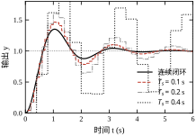
图 37-9 把连续响应与 T_s=0.1,0.2,0.4 s 的离散响应画在一起。阶梯状折线是零阶保持的直观表现；T_s=0.4 s 时折线的“台阶”已经宽到足以掩盖振荡细节，此时讨论超调百分比意义不大，应改用“包络峰值”或直接看连续重建信号。
离散系统的指标验收要明确三件事：
delay_steps=1 打开。这一拍在 20 ms 周期下是 0.02 s，在 §37.4.7 的 \omega_c=16.0 rad/s 处折合 18.3°：标准 PD 实现的相位裕度从 57° 掉到 39°，仿真超调从 20.5% 涨到 37.2%。对 T_s=10 ms、\omega_c=50 rad/s 的快回路，同样一拍就是 28.6°，足以让相位裕度腰斩。采样周期越长、回路越快，这一拍的破坏力越大，而它不体现在任何解析公式里，只体现在仿真的 delay_steps 参数里。同一个连续对象，用不同的离散化方法会得到不同的 G(z)，指标也随之不同。以 G_0(s)=10/[s(s+2)]、C=1、T_s=0.1 s 为例，四种常用方法的结果如下。
| 方法 | M_p (%) | t_r (s) | t_s (s) | 谱半径 | 与连续值的偏差 |
|---|---|---|---|---|---|
| 连续（基准） | 35.17 | 0.424 | 3.545 | — | — |
| ZOH | 46.44 | 0.405 | 5.400 | 0.9287 | M_p 高 11.3 个百分点 |
| Tustin | 35.25 | 0.437 | 3.600 | 0.9068 | M_p 仅差 0.08 个百分点 |
| 前向欧拉 | 60.37 | 0.350 | 7.200 | 0.9487 | M_p 高 25.2 个百分点 |
| 后向欧拉 | 21.43 | 0.513 | 2.700 | 0.8771 | M_p 低 13.7 个百分点 |
只看“谁最像连续系统”，Tustin 是赢家；但这个结论不能直接搬到工程上，因为离散化的对象不同，正确方法也不同。
一条实用规则：对象用 ZOH，控制器用 Tustin，两者不要混用同一种方法。很多仿真“复现不了现场”的案例，根源就是图省事，把对象也用 Tustin 离散，结果延迟效应被悄悄抹掉，仿真比现场乐观一大截。
实验室里的阶跃响应只有对象与控制器的相互作用；现场还有饱和、死区、量化、噪声和计算延迟。它们在指标上各留一笔账。仍用统一算例，T_s=0.02 s，逐项注入，结果如下。
| 工况 | M_p (%) | t_r (s) | t_s (s) | 稳态值 |
|---|---|---|---|---|
| 理想 | 37.19 | 0.418 | 3.560 | 1.0000 |
| 饱和 \pm0.6 | 32.80 | 0.497 | 3.660 | 1.0002 |
| 死区 0.05 | 34.18 | 0.445 | 3.580 | 1.0141 |
| 量化 0.02 | 36.72 | 0.420 | 4.320 | 1.0040 |
| 噪声 0.01 | 37.55 | 0.423 | 6.080 | 1.0017 |
| 延迟 5 拍（0.1 s） | 64.00 | 0.372 | 7.740 | 0.9992 |
逐项解读：
饱和降低超调、放慢上升。 控制量被限在 \pm0.6 后，前段相当于“增益变小”，系统用满额输出加速，等误差落到线性区才恢复比例关系。结果是 t_r 从 0.418 s 拉到 0.497 s，超调反而从 37.2% 降到 32.8%。这不是好事：饱和把能量“削平”了，若限幅更深，系统会进入“加速—饱和—刹车不及”的循环，超调会在某个临界幅值突然反弹。
死区留下稳态偏置。 控制器输出在 \pm0.05 内不动，系统停在误差 0.0141 处（约 1.4%）。死区宽度增到 0.1 时偏置升到 9.3%，且方向取决于最后一次动作的方向，可正可负。这类偏置无法靠调增益消除，只能减小死区、加积分（积分会把误差推到死区边缘来回跳）或改用抖动（dither）。
量化把调节时间拉长两成。 步长 0.02 时 t_s 从 3.56 s 涨到 4.32 s。原因是控制量只能取离散档位，系统在目标附近形成小幅极限环，\pm2\% 带的最后一次越界被这个环推后。步长增到 0.05，t_s 仍是 4.34 s——极限环的幅值由对象与步长共同决定，不是简单的线性关系。
噪声让调节时间失去意义。 输出叠加标准差 0.01 的噪声后，t_s 从 3.56 s 变成 6.08 s，看似“慢了 71%”。换随机种子重跑五次，t_s 分别是 6.08、7.64、7.40、7.30、7.80 s，均值 7.24 s、极差 1.72 s（约 24%）。同一套参数、同一套代码，只因噪声样本不同，t_s 就能差出 1.7 s。这说明带噪声时不能用单次 t_s 做验收，正确做法是多次运行取中位数或 95% 分位，并在判稳前先做低通或滑动平均。
计算延迟与连续延迟对得上。 5 拍延迟（0.1 s）给出 64.00%/0.372/7.740；§37.6 中连续延迟 0.1 s 的结果是 60.75%/0.376/7.62（Padé 近似）。两条路径相差不到 3 个百分点、0.12 s，说明“一拍延迟 = T_s 的纯延迟”这个折算在低频段是可靠的。反过来，若把延迟拍数漏掉，仿真会明显偏乐观——这也是现场“样机一上电就振”的常见原因。
把这六行放在一起看，会发现一个规律：非理想因素几乎都让指标变差，唯独饱和让超调变好。因此不能只挑“看起来合格”的那一行写进报告；验收必须在最坏组合下做——最大延迟、最大死区、最小饱和限幅、最差噪声，全部叠加后再看指标是否仍然达标。这就是 §37.10 要展开的现场复核。
时域指标有一个隐含前提：系统必须稳定。极点落在右半平面时，响应发散，超调与调节时间都没有意义。本节讨论稳定性边界怎么限制指标，以及“更快”与“更稳”之间的定量冲突。
对连续系统，闭环极点实部全为负是稳定的充要条件；对离散系统，极点模全小于 1。稳定边界附近会发生两件事：调节时间趋于无穷，超调趋于无穷。因此设计时不能把指标压到边界上，必须留稳定裕度。
以一个三阶对象 G(s)=K/[(s+1)(s+2)(s+5)] 为例，闭环特征多项式为
s^3+8s^2+17s+(10+K)=0 \tag{37-19}
按劳斯判据，稳定的充要条件是
8\times17-(10+K)>0\;\Longrightarrow\;K<126 \tag{37-20}
K=126 时系统处于临界稳定，阶跃响应等幅振荡，调节时间为无穷。若按“尽量快”的思路把 K 取到 120，虽然理论上稳定，但极点实部仅约 -0.02，参数稍有漂移就发散。工程上通常把工作点取在临界增益的 1/3–1/2，即 K=40–60，用牺牲一部分快速性换取鲁棒性。劳斯判据的完整用法见第 38 章，频域裕度见第 39–41 章。
延迟不改变稳态增益，却持续消耗相位，因此它压缩稳定域。仍以 G(s)=2/[(s+1)^3] 为单位反馈对象，串入纯延迟 \tau（三阶 Padé 近似），仿真结果见表 37-9。
| 延迟 \tau (s) | 最大极点实部 | 稳定性 | 峰值 | 终值 | 超调 (%) |
|---|---|---|---|---|---|
| 0.0 | −0.3700 | 稳定 | 0.866 | 0.667 | 29.9 |
| 0.5 | −0.1741 | 稳定 | 1.032 | 0.666 | 54.9 |
| 1.0 | −0.0621 | 稳定 | 1.203 | 0.716 | 68.1 |
| 1.5 | −0.0032 | 稳定（临界） | 1.357 | 0.790 | 71.8 |
| 2.0 | +0.0281 | 不稳定 | 2.440 | — | — |
表中三行信息值得注意：
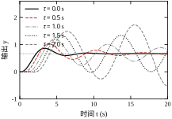
图 37-10 把五条响应画在一起。\tau\ge1.5 s 的两条曲线在 10 s 后仍在缓慢爬升或发散，与“稳定”的直觉不符——这正是“临界稳定”的典型外观：短期看像收敛，长期看是慢发散。
在二阶系统里，\zeta 同时影响超调与调节时间：\zeta 从 0.3 增到 0.7，超调从 37% 降到 4.3%，但上升时间从 0.264 s 增到 0.430 s（表 37-3）。这不是调参技巧能消除的矛盾，而是二阶系统的内在约束。
把这条约束画成图 37-8，可以直观看到“超调—调节时间”的权衡曲线：曲线左端（小 \zeta）超调大但归一化调节时间长，右端（大 \zeta）超调小但上升慢，中间在 \zeta\approx0.7 附近有一个“兼顾点”。任何声称“既无超调又最快”的设计，要么改变了系统结构（加零点、加前馈），要么只在特定指标口径下成立。
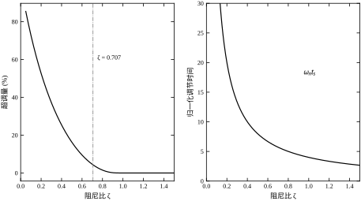
这条约束在“逼近稳定边界”时表现得最刺眼。取 G(s)=K/(s+1)^3，它的临界增益 K_u=4（推导见 §37.8.7，同一对象）。把工作点从 0.50K_u 推到 0.99K_u，四组仿真结果为：K=0.50K_u 时 M_p=29.9\%、t_r=1.35 s、t_s=10.1 s；0.75K_u 时 43.1%、1.11 s、13.6 s；0.88K_u 时 48.9%、1.03 s、15.3 s；0.99K_u 时 53.8%、0.97 s、17.1 s。
增益几乎翻倍，上升时间只缩短 28%，超调却涨了 24 个百分点，调节时间涨了 70%。这就是“快与稳”的定量冲突：越靠近边界，买到的快速性越少，付出的振荡代价越大。更要注意 t_s 在最后一段几乎不再增长（17.12 s 到 17.09 s），这不是性能改善，而是“最后一次越出”判据在长振荡中的假象——包络仍在缓慢衰减，只是越带时刻被振荡相位掩盖。判据失效时，应改看包络或直接看极点实部，§37.6.2 的临界延迟分析用的就是后者。
因此工程上把工作点取在 0.5K_u–0.75K_u：这一段里每增加 10% 增益还能换到约 4% 的上升时间，超过 0.8K_u 之后收益迅速衰减，而模型误差、延迟、执行器非线性都会把实际边界往下拉。
实验室指标是在标称参数下测的，现场参数会漂。对 G_0(s)=10/[s(s+2)]、C=1 的系统，让增益与时间常数各变化 ±20%，仿真结果见表 37-10。
| 增益变化 | 时间常数变化 | M_p (%) | t_r (s) | t_s (s) |
|---|---|---|---|---|
| −20% | −20% | 25.87 | 0.461 | 2.662 |
| −20% | 0 | 30.50 | 0.493 | 3.874 |
| −20% | +20% | 34.25 | 0.523 | 4.321 |
| 0 | −20% | 30.50 | 0.394 | 3.100 |
| 0 | 0 | 35.09 | 0.425 | 3.538 |
| 0 | +20% | 38.79 | 0.453 | 4.723 |
| +20% | −20% | 34.26 | 0.349 | 2.881 |
| +20% | 0 | 38.78 | 0.377 | 3.937 |
| +20% | +20% | 42.39 | 0.404 | 4.432 |
九行数据里有两对值得注意的“重复”：增益 -20\%、时间常数不变，与增益不变、时间常数 -20\%，两行 M_p 都是 30.50%，t_r 却是 0.493 s 与 0.394 s；增益 -20\%、时间常数 +20\%，与增益 +20\%、时间常数 -20\%，两行 M_p 都是 34.3%，t_r 却是 0.523 s 与 0.349 s，差了 50%。
这不是数值巧合。把对象写成标准形式 G=K/[s(Ts+1)]，闭环特征方程为 Ts^2+s+K=0，与 s^2+2\zeta\omega_n s+\omega_n^2=0 对比得
\omega_n=\sqrt{\frac{K}{T}},\qquad \zeta=\frac{1}{2\sqrt{KT}},\qquad \zeta\omega_n=\frac{1}{2T}
于是形状只由乘积 KT 决定，速度只由比值 K/T 决定，衰减快慢只由 T 决定。两对行的 KT 分别相同，所以 M_p 相同；K/T 不同，所以 t_r 不同。把四角与中心按这两个组合量重排，规律一目了然：
| 增益 | 时间常数 | KT | K/T | \zeta | \omega_n (rad/s) | M_p (%) | t_r (s) | t_s (s) |
|---|---|---|---|---|---|---|---|---|
| −20% | −20% | 1.60 | 10.0 | 0.395 | 3.162 | 25.87 | 0.461 | 2.662 |
| −20% | +20% | 2.40 | 6.67 | 0.323 | 2.582 | 34.25 | 0.523 | 4.321 |
| 0 | 0 | 2.50 | 10.0 | 0.316 | 3.162 | 35.09 | 0.425 | 3.538 |
| +20% | −20% | 2.40 | 15.0 | 0.323 | 3.873 | 34.26 | 0.349 | 2.881 |
| +20% | +20% | 3.60 | 10.0 | 0.264 | 3.162 | 42.39 | 0.404 | 4.432 |
把这张表当“两个旋钮”来读，比逐行背诵有用。
增益漂移只动 KT、不动 \zeta\omega_n。 所以增益标定错了，表现是“形状变差、快慢基本不变”：M_p 在 30.5%–38.8% 之间摆，t_s 只在 3.54–3.94 s 之间动（±11%）。现场若看到超调明显超标而调节时间变化不大，先查传感器量程、阀门流量系数这类“增益类”误差，不要去拧微分。
时间常数漂移同时动 KT 与 K/T。 表现是“又慢又振”：T 加 20%，t_r 从 0.425 s 涨到 0.453 s、t_s 从 3.54 s 涨到 4.72 s，超调同时涨 3.7 个百分点。这类误差要去查惯量、容腔容积、管路长度，调参数只会把别处的余量吃掉。
三条对角线（K/T=10）的 \omega_n 完全相同（3.162 rad/s），t_r 从 0.461 s 减到 0.404 s 全部来自 \zeta 下降，再次印证“\zeta 管形状、\omega_n 管尺度”。
最后是验收口径。超调的最坏点与调节时间的最坏点不在同一个角点：M_p 在 (+20\%,+20\%) 取到 42.39%，t_s 却在这一行是 4.432 s，真正最大的是 (0,+20\%) 的 4.723 s。原因是 t_s 由“最后一次越出 \pm2\% 带”决定，振荡相位与带边的相对位置会带来 5%–10% 的抖动，不能按单调性外推。
由此得两条操作规则。第一，M_p 对 K、T 都单调，九点只需测四个角；t_s 对增益不单调（T 不变时依次为 3.874、3.538、3.937 s，中间最低），必须补测中间点。第二，若验收线是 M_p\le40\%，标称设计应压到 33% 左右（约留 7 个百分点余量），否则最坏角点必然越线。用最坏工况做设计，用标称工况做展示，顺序不能反。
工程上常用相位裕度 PM 快速估计闭环阻尼：
\zeta\approx\frac{PM}{100} \tag{37-21}
式 (37-21) 中 PM 以度为单位，适用于 PM\in[30^\circ,70^\circ]。PM=45^\circ 对应 \zeta\approx0.45、超调约 20%；PM=60^\circ 对应 \zeta\approx0.6、超调约 10%。这条经验式把频域设计与时域验收连了起来：客户要求超调 ≤10%，就把相位裕度设计到 60° 以上。
但式 (37-21) 是拟合式，不是定理。对无零点的标准二阶闭环，PM 与 \zeta 的精确关系是
PM=\arctan\frac{2\zeta}{\sqrt{\sqrt{1+4\zeta^4}-2\zeta^2}}
反解出来的对照如下（偏差定义为“精确值相对 PM/100 的相对误差”）：
| 目标 PM | 精确 \zeta | PM/100 | 偏差 | M_p (%) |
|---|---|---|---|---|
| 30^\circ | 0.269 | 0.300 | −10.5% | 41.6 |
| 45^\circ | 0.420 | 0.450 | −6.6% | 23.3 |
| 60^\circ | 0.612 | 0.600 | +2.1% | 8.8 |
| 70^\circ | 0.803 | 0.700 | +14.8% | 1.4 |
| 80^\circ | 1.182 | 0.800 | +47.7% | 0 |
这张表最重要的信息不是数值，而是误差的方向。PM<60^\circ 时公式高估阻尼、低估超调——30^\circ 处估出 \zeta=0.30，实际只有 0.269，超调被少算 5 个百分点。这是危险方向：按公式算“合格”，仿真却是 41.6%。PM>60^\circ 时反过来，公式低估阻尼、高估超调，属于保守方向，多留余量不算错。所以 60° 不只是“指标均衡点”，还是这条拟合式的误差过零点——这是把 60° 当甜点的第三重理由。
再往下就是适用边界。PM 定超调，需要同时满足“无闭环零点、无大延迟、二阶主导”三条。
闭环零点会把超调抬上去。 本章 §37.4 的标准 PD 设计 PM=57.1^\circ，按式 (37-21) 估 \zeta\approx0.571、M_p\approx11\%；实际仿真（T_f=0.01 s）是 18.25%，高出 7 个百分点。多出来的部分来自闭环零点 -1/T_d\approx-9.6 rad/s：它几乎落在 \omega_n=\sqrt{10K_p}=11.6 rad/s 上，加快初始上升、把峰值顶得更高，而它对相位的贡献已经算进 PM 里了。零点越靠近虚轴，这个差额越大。
延迟也只被算了一次账。 纯延迟在 PM 里以 -\omega_c\tau 的形式扣过一遍，但时域上它还额外造成“控制量迟到”，超调的增量比相位账更多。§37.6.7 的数据可以对照：\tau=0.05 s 只把 PM 从 34.9° 压到约 26.7°，超调却从 35% 跳到 46.6%。
PM 合格也不代表增益裕度够。 本章对象 G_0=10/[s(s+2)] 的相位最多趋于 -180^\circ，增益裕度无穷大，PM 确实是唯一约束；换成三阶对象或含延迟的回路，PM=60^\circ 可能只配着几 dB 的增益裕度，增益一漂就振。完整判据要两个裕度一起看，见第 41 章。
一句话收口：式 (37-21) 适合做初筛和报价——快速说出“大概多少超调”；不适合做验收和定责——那必须回到时域仿真，且仿真里要带零点、延迟与饱和。
把式 (37-21) 放到统一算例上检验。仍取 G_0(s)=10/[s(s+2)]，控制器为纯比例，按目标相位裕度反解增益：由 PM=90^\circ-\arctan(\omega_c/2) 解出 \omega_c，再由 |G_0(\mathrm{j}\omega_c)|K_p=1 定 K_p。五个点的结果如下。
| 目标 PM | K_p | \omega_c (rad/s) | 实际 \zeta | M_p (%) | t_r (s) | t_s (s) |
|---|---|---|---|---|---|---|
| 30^\circ | 1.386 | 3.464 | 0.269 | 41.64 | 0.344 | 3.751 |
| 45^\circ | 0.566 | 2.000 | 0.420 | 23.32 | 0.629 | 3.531 |
| 60^\circ | 0.267 | 1.155 | 0.612 | 8.77 | 1.154 | 3.653 |
| 70^\circ | 0.155 | 0.728 | 0.803 | 1.44 | 1.993 | 3.040 |
| 80^\circ | 0.072 | 0.353 | 1.182 | 0.00 | 5.055 | 9.151 |
五行数据说明三件事。
第一，式 (37-21) 在中间段最准，两端都有偏差。PM=60^\circ 时估计 \zeta=0.60、实测 0.612，误差 2%；45^\circ 时估计 0.45、实测 0.420，偏低 7%，对应超调被低估约 3 个百分点；70^\circ 时估计 0.70、实测 0.803，偏高 15%，超调被高估 3 个百分点。两端更明显：30^\circ 时公式估 0.30，实际只有 0.269，实测 41.6% 的超调会被报成 37%；80^\circ 时实际 \zeta 已达 1.18、系统过阻尼，公式却还给出 0.80、预测约 1.5% 的超调。原因是这条经验式由二阶精确关系在 \zeta\approx0.5 附近拟合而来，两端都会偏离。60° 既是拟合误差的过零点，也是指标最均衡的点，所以叫“甜点”。
第二，“相位裕度主要管形状、不太管速度”只在 60° 以下成立。30^\circ–70^\circ 四点的 t_s 都在 3.0–3.8 s，差别不到 25%，超调却从 41.6% 降到 1.4%。原因仍是 \zeta\omega_n=(2+10K_pT_d)/2：纯比例时 T_d=0，\zeta\omega_n\equiv1 与 K_p 无关，t_s\approx4/(\zeta\omega_n)=4 s 被结构钉死。但到 80^\circ，\zeta>1、系统进入过阻尼，主导极点不再是那对复极点，t_r 从 1.99 s 拉到 5.06 s、t_s 从 3.04 s 涨到 9.15 s。所以“裕度越大越好”是错的：超过 70° 之后，多出来的裕度全部换成时间。
第三，“相位裕度 60° 对应超调 10%”这条口诀不能反过来用。反过来用意味着“超调 10% 就一定要 60°”，但上表 8.77% 对应的是 60°，而含零点或延迟的系统在 60° 下可能给出 20% 以上。裕度是必要条件的近似，不是充分条件。
延迟把系统推向不稳定，临界值可以不解微分方程、直接用频域算出来。对单位反馈系统，增益穿越频率 \omega_c 由 |C(\mathrm{j}\omega_c)G(\mathrm{j}\omega_c)|=1 定出；延迟不影响幅值，所以 \omega_c 与无延迟时相同。相位裕度为
PM=180^\circ+\angle C(\mathrm{j}\omega_c)G(\mathrm{j}\omega_c)-\omega_c\tau
令 PM=0，得临界延迟
\tau_c=\frac{180^\circ+\angle C(\mathrm{j}\omega_c)G(\mathrm{j}\omega_c)}{\omega_c} =\frac{PM_0}{\omega_c}
其中 PM_0 是无延迟时的相位裕度，角度必须换成弧度。代入本章数据：|G_0(\mathrm{j}\omega)|=10/[\omega\sqrt{\omega^2+4}]=1 解出 \omega_c=2.863 rad/s，PM_0=90^\circ-\arctan(2.863/2)=34.94^\circ=0.6098 rad，于是
\tau_c=\frac{0.6098}{2.863}=0.213\ \mathrm{s}
时域仿真验证：\tau=0.20 s 时闭环仍稳定但超调 113%、t_s 超出 40 s 窗口；\tau=0.21 s 时超调 326%；\tau=0.22 s 时发散。解析值 0.213 s 与仿真的临界点 0.21–0.22 s 吻合。这条公式的价值在于不用试凑：只要知道穿越频率与相位裕度，就能报出“这个回路最多能容忍多少延迟”。
但“稳定”不等于“可用”。仿真数据是：\tau=0.05 s（0.23\tau_c）时 M_p=46.6\%、t_s=5.34 s；\tau=0.10 s（0.47\tau_c）时 60.8%/7.62 s；\tau=0.15 s（0.70\tau_c）时 77.2%/15.99 s。也就是说，延迟用到临界值的一半，指标已经退化一倍；用到七成，系统虽然稳定，响应却慢到没有工程意义。工程可用的延迟上限约为 0.3\tau_c，本章算例对应 0.064 s，而不是 0.213 s。这条“三分之一”经验线，比“临界稳定”更接近现场的真实约束。
最后注意两个前提。其一，\tau_c 是在“控制器不变”的前提下算的；若为补偿延迟而降低增益，\omega_c 与 PM_0 都会变，必须重算。其二，增益裕度有限时，延迟还会与增益裕度耦合，单看相位裕度可能高估容忍度——完整判据要看奈奎斯特曲线与单位圆的交点，见第 39 章。
§37.6.7 的 \tau_c 是在固定控制器下算的。现场更常见的问题反过来了：想把增益提高一倍，延迟的容忍度还剩多少？ 答案不是“各算各的”，两者之间有一个近似守恒的乘积。
对象仍取 G_0=10/[s(s+2)]，控制器为纯比例 K_c。由 |10K_c/[\mathrm{j}\omega(\mathrm{j}\omega+2)]|=1 解出
\omega_c=\sqrt{\frac{-4+\sqrt{16+400K_c^2}}{2}}
相位裕度 PM_0=90^\circ-\arctan(\omega_c/2)，临界延迟 \tau_c=PM_0/\omega_c（角度换成弧度）。七个增益点的结果如下。
| K_c | \omega_c (rad/s) | PM_0 | \tau_c (s) | K_c\tau_c (s) | 可用 0.3\tau_c (s) |
|---|---|---|---|---|---|
| 0.50 | 1.840 | 47.4° | 0.450 | 0.225 | 0.135 |
| 0.75 | 2.400 | 39.8° | 0.289 | 0.217 | 0.087 |
| 1.00 | 2.863 | 34.9° | 0.213 | 0.213 | 0.064 |
| 1.50 | 3.624 | 28.9° | 0.139 | 0.209 | 0.042 |
| 2.00 | 4.254 | 25.2° | 0.103 | 0.207 | 0.031 |
| 3.00 | 5.298 | 20.7° | 0.068 | 0.204 | 0.020 |
| 5.00 | 6.931 | 16.1° | 0.041 | 0.203 | 0.012 |
仿真复核与解析在 ±0.01 s 内吻合：K_c=0.5 时 \tau=0.42 s 仍收敛（末 4 s 峰值 1.23）、0.45 s 进入等幅（2.07）、0.47 s 发散（3.63）；K_c=2 时 0.09 s 收敛（1.02）、0.10 s 临界（1.43）、0.11 s 发散（11.0）。
表里最有用的是倒数第二列：K_c\tau_c 几乎不动，从 0.225 缓慢收敛到 0.203。取极限可以证明：高增益时 \omega_c\approx\sqrt{10K_c}，PM_0\approx2/\omega_c（弧度），于是 \tau_c\approx2/\omega_c^2=0.2/K_c，即
K_c\,\tau_c\approx0.2\ \mathrm{s}
这条守恒律的工程含义很直接：增益翻倍，能容忍的延迟就减半。它把“加增益提速”的代价换算成一个能现场测量的物理量——延迟。若设备固有延迟为 0.05 s，按 0.3\tau_c 的可用线，K_c 最多取 0.2/(0.05/0.3)=1.2；想把 K_c 提到 2，必须先把延迟压到 0.03 s 以下，否则怎么调微分都救不回来。
注意这条守恒律只对“纯比例 + 纯延迟”成立。加积分会额外吃相位，实际边界还要下移 10%–20%；加微分能补回相位，相当于把 \tau_c 放大，但微分本身受噪声限制（§37.9.3）。所以这张表是上限的上限，现场取值应在此基础上再留一半余量。
调参的前提是知道每个参数“管什么、管多少”。本节逐个参数给出物理意义、影响方向与量级，并说明它们之间的耦合——后者往往是“调好一个、坏掉另一个”的根源。
| 参数 | 物理意义 | 单位 | 主要影响 | 典型范围 |
|---|---|---|---|---|
| K | 直流增益（输出/输入） | 视对象而定 | 稳态误差、闭环带宽 | 由对象定 |
| T | 一阶时间常数 | s | 上升与调节时间，t_r\approx2.2T | ms–min |
| \zeta | 阻尼比 | — | 超调与振荡，M_p 只由它决定 | 0.3–0.9 |
| \omega_n | 自然频率 | rad/s | 时间尺度，t_s\propto1/\omega_n | 与工艺节拍匹配 |
| \tau | 纯延迟 | s | 相位滞后、稳定域 | 0–0.3t_r |
| T_s | 采样周期 | s | 离散化误差、ZOH 延迟 | \le t_r/10 |
这张表最容易引起的误读，是把六个参数当成同一层级。实际上它们分两类：
第二类里也没有“一对一”关系。T_i 同时影响稳态误差与相位，T_d 同时影响超调与噪声放大，T_s 同时影响离散误差与 ZOH 延迟。所以“动一个参数、只看一个指标”只是调试时的纪律，不是系统的性质；每次改完都要把五项指标与两路信号（输出、控制量）一起复测。
还有一处口径要分清：表中 \zeta、\omega_n 指闭环参数，而 K、T、\tau 是开环参数，两者之间隔着控制器。前文说“\zeta 管形状”指的是闭环 \zeta；对象若写成二阶形式，它的自然阻尼与闭环阻尼不是一回事，耦合关系见 §37.7.7。跨章节引用时把这两个 \zeta 混用，是最常见的口径事故。
增益同时出现在两个地方：对象的直流增益，以及控制器的比例系数。两者对指标的作用完全不同，必须分开看。
对象增益 K 变化，相当于改变了“输入多少、输出多少”的比例。对 0 型对象，K 增大会减小稳态误差；对含积分的对象，K 不影响阶跃稳态误差，但会改变闭环极点位置。
控制器比例系数 K_c 增大，则同时提高带宽与超调。以 G(s)=K/[s(s+2)]、单位反馈为例，闭环特征多项式为
s^2+2s+K=0 \;\Longrightarrow\; \omega_n=\sqrt{K},\qquad \zeta=\frac{1}{\sqrt{K}} \tag{37-22}
式 (37-22) 揭示了一个反直觉的结论：增大增益会让系统变快，但同时让阻尼比下降。K=10 时 \omega_n=3.16 rad/s、\zeta=0.316，按式 (37-6) 算得 M_p=35.1\%，与表 37-10 中 C=1 的仿真值 35.09% 完全一致。这也解释了为什么“加增益提快”总会伴随超调上升——它不是调参没调好，而是结构决定的。
两类增益的量纲不同，不能混为一谈。对象增益 K 的单位是“输出单位/输入单位”，控制器增益 K_c 的单位是“输入单位/误差单位”，两者相乘才是无量纲的环路增益 K_L=KK_c。现场说“把增益调大一点”，指的总是 K_c；而对象更换、量程改变时变的是 K。这解释了一个常见困惑：同一套控制器参数换到另一台设备上就不好用——不是参数错了，是 K 变了，K_L 跟着变了。
对 0 型对象，K 直接决定稳态误差。取 G(s)=K/(s+1)、单位反馈，K=10 时 e_{ss}=9.09\%，K=20 时 4.76%，K=50 时 1.96%。要把误差从 9% 压到 2%，需要把 K 提高约 5 倍，闭环极点也从 -11 移到 -51，响应快 4.6 倍。这笔交易看起来划算，但执行器要提供 5 倍的稳态控制量，噪声也被放大 5 倍——增益从来不是免费的。
对含积分的对象，K 不改变阶跃稳态误差（仍为零），却改变闭环极点。本章 G_0=10/[s(s+2)] 中，K 从 10 增到 20，等效于 K_c 从 1 增到 2：\omega_n 从 3.16 升到 4.47，\zeta 从 0.316 降到 0.224，超调从 35.1% 涨到 48.6%（表 37-11）。同一句话“增益加倍”，在 0 型对象上主要改精度，在 I 型对象上主要改动态，这是看对象型别下菜的第一条。
T 是一阶对象唯一的动态参数。它同时决定上升时间（2.2T）、调节时间（3.9T）与带宽（\omega_c\approx1/T）。T 减半，响应快一倍，但初始斜率 K/T 加倍，对执行器的冲击也加倍。现场把 T 从 2 s 改到 0.5 s，往往要同时检查电机电流是否超限。
T 的辨识误差对指标影响是线性的：T 估大 20%，t_r 与 t_s 都会估大 20%。因此 §37.3.4 强调阶跃试验要覆盖足够长的窗口，否则 T 会被低估。
三个时间常数的实测值可以说明这种线性关系：
| T (s) | t_r (s) | t_r/T | t_s (s) | t_s/T | 带宽 1/T (rad/s) |
|---|---|---|---|---|---|
| 0.5 | 1.097 | 2.19 | 1.947 | 3.89 | 2.0 |
| 1.0 | 2.194 | 2.19 | 3.895 | 3.90 | 1.0 |
| 2.0 | 4.388 | 2.19 | 7.789 | 3.89 | 0.5 |
三行的比值完全一致，说明一阶系统的形状是固定的，T 只负责整体缩放。工程上因此可以记两个常数：t_r=2.2T、t_s=3.9T（±2% 带），现场量出 T 就能报指标，不需要每次仿真。
闭环之后，时间常数会被反馈“压缩”。对 G=K/(Ts+1) 加比例 K_c，闭环时间常数为 T/(1+KK_c)。取 T=1 s、K=10、K_c=1，闭环时间常数从 1 s 压到 0.0909 s，t_r 从 2.19 s 降到 0.20 s，t_s 从 3.90 s 降到 0.35 s，快了 11 倍。但稳态增益只有 10/11=0.909，稳态误差 9.09%——这就是 0 型系统“快”与“准”不能兼得的定量版本。
\zeta 是唯一“只影响形状、不影响尺度”的参数。它决定超调（式 37-6）、振荡次数与相对稳定性，但与 \omega_n 无关。这一性质带来一个非常实用的调参策略：先调 \zeta 定形状，再调 \omega_n 定快慢，两者近似解耦。
灵敏度方面，在 \zeta=0.5 附近，\zeta 每增加 0.01，超调约下降 0.8 个百分点；在 \zeta=0.2 附近，同样 0.01 的增量能降 1.8 个百分点；到了 0.7 以上只剩 0.3 个百分点。也就是说，小阻尼区对 \zeta 更敏感，调参时步长要更小。把四个点列出来：
| \zeta | M_p (%) | 每 0.01 阻尼对应的超调变化 |
|---|---|---|
| 0.20 | 52.66 | −1.8 个百分点 |
| 0.50 | 16.30 | −0.8 个百分点 |
| 0.70 | 4.33 | −0.3 个百分点 |
| 0.90 | 0.15 | −0.05 个百分点 |
这张表解释了一个现场现象：小阻尼系统“动一点就变很多”，而 \zeta>0.7 之后再加阻尼几乎看不到效果。所以调参应从大往小逼近：先把 \zeta 拉到 0.7 以上压住超调，再逐步减小直到超调刚好达标；反过来从小往大调，很容易在敏感区来回过冲。
\zeta 的物理来源有三类：对象的自然阻尼（如机械摩擦、电阻尼）、控制器引入的阻尼（如微分作用）、以及采样与延迟带来的等效阻尼损失。第三类常被忽略：同一套连续参数，采样周期从 1 ms 增到 20 ms，等效 \zeta 可能下降 0.1 以上。
\omega_n 是所有时间尺度的基准：t_r\propto1/\omega_n、t_p\propto1/\omega_n、t_s\propto1/\omega_n。\omega_n 加倍，三个时间指标近似减半，超调不变。
\omega_n 的上限由三件事约束：执行器带宽（电机、阀门的响应速度）、采样频率（\omega_n 不能接近 \omega_s/10）、以及未建模高频动态（每提高一倍带宽，就多暴露一层高频模态）。工程上把 \omega_n 定在“对象第一转折频率的 1/3–1/2”是常见做法。
固定 \zeta=0.5，让 \omega_n 取 2、5、10 rad/s，三个时间指标等比缩放：
| \omega_n (rad/s) | t_r (s) | t_p (s) | t_s (s) | M_p (%) |
|---|---|---|---|---|
| 2 | 0.82 | 1.81 | 4.00 | 16.3 |
| 5 | 0.33 | 0.73 | 1.60 | 16.3 |
| 10 | 0.16 | 0.36 | 0.80 | 16.3 |
三行的超调完全相同，时间指标与 \omega_n 成反比。这就是“\omega_n 管尺度”的准确含义：它不动形状，只动时间轴。
三条上限可以用同一个例子串起来。若对象的第一转折频率为 100 rad/s，则 \omega_n\le33–50 rad/s；若采样周期为 5 ms（\omega_s=1257 rad/s），则 \omega_n\le125 rad/s；若执行器带宽只有 30 rad/s，则 \omega_n 不应超过 10–15 rad/s。三者取最小，实际可用值由执行器决定。这也解释了为什么“换更快的电机”往往比“改控制算法”更能提升节拍——瓶颈常在执行器，不在控制器。
延迟的幅频特性恒为 1，相频特性为 -\omega\tau。它不影响稳态精度，也不改变幅频形状，但会实打实地消耗相位裕度：等效阻尼下降，超调随之上升，而且这个代价无法靠调增益补回来。\tau 每增加 0.1t_r，可用的闭环带宽大约下降 10%–15%。
延迟的代价可以精确折算成相位。本章回路穿越频率 2.863 rad/s，每 0.01 s 延迟损失 57.3\times2.863\times0.01=1.64^\circ 相位裕度；原本 34.9° 的裕度，在 \tau=0.05 s 时剩 26.7°，\tau=0.10 s 时剩 18.5°，\tau=0.15 s 时剩 10.3°。对应到指标：
| \tau (s) | 相位损失 | 剩余 PM | M_p (%) | t_s (s) |
|---|---|---|---|---|
| 0 | 0° | 34.9° | 35.1 | 3.54 |
| 0.05 | 8.2° | 26.7° | 46.6 | 5.34 |
| 0.10 | 16.4° | 18.5° | 60.8 | 7.62 |
| 0.15 | 24.6° | 10.3° | 77.2 | 15.99 |
只加了 50 ms 延迟，超调就涨 11.5 个百分点、调节时间涨 51%。这就是“延迟只花相位”的破坏力：它不改变任何稳态量，却让所有动态指标一起变差，而且无法靠调增益补回来——降增益能换回相位，但同时把带宽降下去，等于用速度换稳定。
延迟的辨识比 T 难：它常与传感器滤波、通信抖动、执行器死区混在一起。工程上把“指令发出到输出开始变化”的时间整体当作 \tau，宁可估大不可估小，因为低估延迟会直接导致现场振荡。
理解了这三条，再看现场“调了增益就振、减了增益就慢”的现象，就知道该动的是结构（加微分、加前馈、减延迟），而不是继续在增益上打转。
把三条耦合关系写成一张“谁动谁”的表，调参时可以直接查：
| 动这个 | \zeta | \omega_n | M_p | t_r | t_s | 稳态误差 |
|---|---|---|---|---|---|---|
| K_p\uparrow | ↓ | ↑ | ↑ | ↓ | 基本不变* | ↓（0 型） |
| T_d\uparrow | ↑ | 不变 | ↓ | ↓（含零点）或 ↑（无零点） | ↓ | 不变 |
| T_i 投入 | ↓ | 略↓ | ↑ | ↓ | ↑ | 阶跃→0 |
| \tau\uparrow | 等效↓ | 不变 | ↑ | 略↓ | ↑↑ | 不变 |
| T_s\uparrow | 等效↓ | 不变 | ↑ | 略↓ | ↑ | 不变 |
* 对本章 G_0，纯比例下 \zeta\omega_n\equiv1，t_s 被钉住；这条“基本不变”只对这类特定结构成立，一般对象仍会变。
这张表最有用的一行是 \tau：它让超调、调节时间一起变差，却完全不碰稳态误差。这意味着用稳态误差判断延迟是否被低估是无效的，必须看动态指标。反过来，若稳态误差莫名变大而动态正常，应先查死区、量化与增益，而不是怀疑延迟。
最后把 §37.2–§37.7 的关系收成一句：\zeta 管形状、\omega_n 管尺度、K_p 同时动两者、T_d 只补形状、T_i 管误差但吃相位、\tau 与 T_s 只吃相位。记住这句，调参时就不会同时动三个旋钮。
有了 §37.7 的参数—指标关系，调参就不该是“试一试”。本节给出一套从指标出发、每次只动一个参数、每步都有验收判据的流程，并给出一个完整算例。
对二阶主导的系统，反向设计只需三步：
三步算完再仿真。若仿真与解析差得远，先查模型阶次与延迟，不要急着改参数。
以 §37.4 的统一例题走一遍。要求 M_p\le5\%、t_s\le0.5 s；对象 G_0=10/[s(s+2)]=5/[s(0.5s+1)]，即 K=5、T=0.5 s。
第一步，由 M_p=5\% 反解式 (37-6) 得 \zeta=0.690。第二步，\omega_n\ge4/(\zeta t_s)=4/(0.690\times0.5)=11.6 rad/s；这里用 4 而不是 3.91，是给判稳口径留 2% 余量。第三步，比例增益
K_p=\frac{\omega_n^2T}{K}=\frac{11.6^2\times0.5}{5}=13.5
再用微分补阻尼。闭环特征方程为 s^2+(2+10K_pT_d)s+10K_p=0，要求 2\zeta\omega_n=2\times0.690\times11.6=16.0，于是
T_d=\frac{16.0-2}{10\times13.5}=\frac{14.0}{135}=0.104
这与 §37.4.7 用频域凑裕度得到的 K_p=13.4、T_d=0.1045 是同一组数。两条路——时域反解与频域凑相位裕度——在二阶主导的系统上必然收敛到同一个答案；若两者差得远，先怀疑降阶是否成立、延迟是否漏算，而不是怀疑哪条公式错了。
推荐的调整顺序与多数现场习惯相反，但更省时间：
反过来先加积分，往往会出现“越调越振”：积分把相位裕度吃掉了，再用微分补，参数互相打架。
这个顺序不是习惯问题，而是由灵敏度决定的。§37.8.3 的实测数据表明：同样 ±20% 的变化，K_d 让超调在 0.16%–9.27% 之间跳，K_p 只让它在 0.82%–5.44% 之间动；而 t_r 主要由 K_p 决定（0.151–0.232 s），K_d 对它的影响不到 20%。先调对超调最敏感的那个旋钮（T_d），再调对速度最敏感的那个（K_p），每步都能看到单一指标明显变化，不会出现“动了半天不知道是谁的功劳”。
积分的特殊性在于它同时动两件事：消掉稳态误差，又把一个极点放到原点、把相位在低频段拉低 90°。放在最后调，是因为只有前两步都稳定了，才能判断“这点残余误差到底该不该用积分去消”——很多场合用前馈或提高型别更划算，加了积分反而把已经调好的动态破坏掉。
每次只改一个参数，步长取 10%–20%。步长太小学不到趋势，太大容易越过稳定边界。每次改动后至少观测三件事：
三项都正常才算这一步调完。只看输出曲线、不看控制量，是现场烧驱动器的主要原因。
步长取多少，取决于该参数对指标的灵敏度，而不同参数的灵敏度差得很远。仍以 §37.4.7 的设计（K_p=13.4、K_d=1.4、T_f=0.01）为基准，基准指标是 M_p=2.94\%、t_r=0.181 s、t_s=0.468 s。把 K_p 单独变化：-20\% 时 M_p=0.82\%、t_r=0.232 s、t_s=0.371 s；+20\% 时 M_p=5.44\%、t_r=0.151 s、t_s=0.445 s。把 K_d 单独变化：-20\% 时 M_p=9.27\%、t_s=0.492 s；-40\% 时 M_p=18.98\%、t_s=0.694 s；+20\% 时 M_p=0.16\%、t_r=0.223 s；+50\% 时 t_r=0.303 s、t_s=0.558 s。
两列一对比就清楚了：K_p 每变 10%，超调约动 1.2 个百分点；K_d 减 20% 超调跳到 9.3%，减 40% 到 19%，而加 20% 就压到 0.16%。K_d 对超调的影响比 K_p 大 1–2.5 倍，且严重不对称：往下调比往上调危险得多。因此 K_p 可以按 10%–20% 走，K_d 每次只动 5%–10%，且优先往上试。反过来，K_d 加过头会把系统推入过阻尼：+50\% 时超调归零，但 t_r 从 0.181 s 涨到 0.303 s、t_s 涨到 0.558 s，“不超调”是用“变慢”换来的，不能算改进。
还有一处非线性要注意：K_p 从 13.4 减到 12.1 时，t_s 反而从 0.468 s 缩到 0.317 s。这不是测量错误，而是 t_s 由“最后一次越出”决定，参数变化改变了振荡相位，越带时刻跟着跳。调参时不要用 t_s 的单调性做判断，要看 M_p 与包络；t_s 只在指标验收时用。
| 目标 | 推荐取值 | 依据 |
|---|---|---|
| 超调 ≤5% | \zeta\ge0.69 | 式 (37-12) |
| 超调 ≤10% | \zeta\ge0.59 | 式 (37-6) |
| 超调 ≤20% | \zeta\ge0.46 | 式 (37-6) |
| 兼顾快与稳 | \zeta=0.6–0.8 | 工业惯例 |
| 相位裕度 | PM\ge45^\circ，精密场合 \ge60^\circ | 式 (37-21) |
| 采样周期 | T_s\le t_r/10 | §37.5.3 |
这张表是起点，不是终点。伺服、液压、温度三类对象的可用 \zeta 差别很大：伺服常取 0.8 以上（怕冲击），温度对象常取 0.4–0.5（怕慢）。
表里“超调”与“相位裕度”两行其实是同一条线。按精确关系，PM=45^\circ 对应 \zeta=0.420、M_p=23.3\%；PM=60^\circ 对应 0.612、8.8%；PM=65^\circ 对应约 0.69、5%。若用 \zeta\approx PM/100 粗估，45° 会给出 20.5%、60° 给 9.5%，两头都差几个百分点。所以现场若只写一句“相位裕度不低于 45°”，实际是“允许 23% 左右的超调”；要把超调压到 5% 以内，得要求 PM\ge65^\circ。写验收条款时，两个指标不能各写各的，否则一定自相矛盾。
回到 G_0(s)=10/[s(s+2)]、C=1 的系统。标称指标为 M_p=35.09\%、t_r=0.425 s、t_s=3.54 s；要求改成 M_p\le10\%、t_r\le0.25 s。
第一步，先看纯比例能不能做到。M_p\le10\% 要求 \zeta\ge0.59，由式 (37-22)（其中环路增益 K_L=10K_c）反解出 K_c\le0.287；此时 \omega_n=\sqrt{10K_c}=1.69 rad/s，仿真得 M_p=10.05\%、t_r=1.081 s。超调刚好达标，上升时间却差 4 倍。反过来，为了 t_r\le0.25 s 把 K_c 提到 5，t_r 降到 0.162 s，但 M_p 冲到 63.84%。纯比例在这两项指标之间没有交集，这是 §37.9.1 那条硬约束的直接后果。
第二步，换成 PD 控制 C(s)=K_p(1+T_ds)，两个参数分工明确：K_p 定尺度，\omega_n=\sqrt{10K_p}；T_d 定形状，\zeta=(1+5K_pT_d)/\sqrt{10K_p}。
第三步，先固定 K_p=1 扫 T_d：T_d=0.2 s 得 M_p=10.42\%、t_r=0.474 s；T_d=0.4 s 得 M_p=1.61\%、t_r=0.455 s。超调降下来了，t_r 却几乎不动——因为 K_p 没变，\omega_n 还是 3.16 rad/s，尺度没变。
第四步，改尺度。取 K_p=3、T_d=0.3 s，得 M_p=4.77\%、t_r=0.189 s、t_s=0.828 s，两项指标同时满足。此时 \omega_n=5.48 rad/s、\zeta=1.00，闭环极点为 -5 与 -6，已经是过阻尼；按二阶公式应当零超调，实测 4.77% 全部来自 C 引入的零点 -3.33。
这个算例给出三条可复用的结论：
| 症状 | 可能原因 | 对策 |
|---|---|---|
| 等幅振荡、不衰减 | 增益过高、延迟被低估 | 降增益 30%，重测延迟 |
| 到位后缓慢爬行 | 死区、摩擦力、积分过弱 | 测死区，加积分或摩擦补偿 |
| 输出有高频毛刺 | 微分增益过大、编码器噪声 | 加微分滤波，降低 T_d |
| 大阶跃后长时间不回 | 积分饱和 | 加抗饱和（clamping/back-calculation） |
表的四行只是“症状—病因”的快速对照，真正难的是把症状读成参数。四类症状各有自己的定量指纹，抓住指纹就不用试凑。
等幅振荡看峰谷比。 若第二个峰与第一个峰几乎同高（比值大于 0.95），说明极点实部已经贴到零。§37.6.3 的数据可作标尺：K=0.99K_u 时 M_p=53.8\%、t_s=17.1 s，包络衰减得极慢；K=120（临界 126）时极点实部只有 -0.02。对策不是微调，而是把增益退回 0.6–0.7K_u，同时重测延迟——延迟被低估 0.1 s，等价于凭空多花掉十几度相位，靠降增益只能把问题压住，不能解决。
缓慢爬行看偏置方向。 稳态误差卡在一个固定值上，改变给定后偏置跟着换向，这是死区或摩擦的特征。§37.5.7 的死区实验给出量级：死区 0.05 时残差 1.4%，死区 0.1 时 9.3%，近似成正比。这类误差调增益无效——增益再大，死区内控制量仍是零——只能减小死区、加积分或加抖动。
高频毛刺看控制量的频谱，不看输出。 微分环节对高频的放大倍数是 K_pT_d/T_f：本章设计 K_p=13.4、T_d=0.1045，取 T_f=0.01 s 时放大 140 倍，取 T_f=0.002 s 时放大 700 倍，相差 5 倍。所以看到毛刺的第一个反应应该是“T_f 是不是太小”，而不是“K_d 是不是太大”——后者会把有用的阻尼一起砍掉。
大阶跃后长时间不回看控制量方向。 若误差已经反号，控制量仍贴着限幅值不放，就是积分饱和。§37.5.7 的饱和实验（限幅 \pm0.6）给出 t_r=0.497 s、M_p=32.8\%，比不限幅的 0.418 s/37.2% 更慢；注意超调反而小了，容易被误读成“限幅有益”，实际是积分被顶住后动态变钝，一松限幅就会反弹。
抗积分饱和的具体实现见第 44 章，本章只需知道：只要执行器有限幅，就必须考虑积分饱和，否则 §37.10 的现场测试一定不合格。
现场最常被引用的整定法是 Ziegler-Nichols 临界比例度法。它的操作是：把积分、微分关掉，只加比例，直到系统出现等幅振荡，记下此时的临界增益 K_u 与振荡周期 T_u，再按经验公式取参数。以 G(s)=2/[(s+1)^3] 为例，闭环特征式为
(s+1)^3+2K=s^3+3s^2+3s+(1+2K)=0
劳斯表第三行为 (9-1-2K)/3，令其为零得 K_u=4；代回辅助方程 3s^2+9=0 得 \omega_u=\sqrt3，于是 T_u=2\pi/\sqrt3=3.628 s。按 ZN 公式，PID 取 K_p=0.6K_u=2.4、T_i=T_u/2=1.814 s、T_d=T_u/8=0.454 s。仿真结果为 M_p=41.45\%、t_r=0.853 s、t_s=9.29 s、相位裕度 30.1°、控制量峰值 81。
若按本章的流程整定同一对象：先由 M_p\le10\% 定 \zeta\ge0.59，再由 t_s\le4 s 定 \zeta\omega_n\ge1，取 K_p=1.5、T_i=2.5 s、T_d=0.8 s，实测 M_p=6.16\%、t_r=1.178 s、t_s=3.20 s、相位裕度 62.5°、控制量峰值 37。两套参数的对比如下。
| 方法 | K_p | T_i (s) | T_d (s) | M_p (%) | t_s (s) | PM | u 峰值 |
|---|---|---|---|---|---|---|---|
| ZN 临界比例度 | 2.40 | 1.81 | 0.45 | 41.45 | 9.29 | 30.1° | 81.3 |
| 本章反向设计 | 1.50 | 2.50 | 0.80 | 6.16 | 3.20 | 62.5° | 37.0 |
差距不是“调得粗细”的问题，而是目标不同。ZN 的公式来自“四分之一衰减”经验——它追求的是相邻两个峰值的幅值比为 1:4，对应阻尼比约 0.2、超调约 50%。上表 41.5% 正好落在这个区间。对允许大幅超调、只求快速稳定的过程控制（液位、压力、流量），这个目标可以接受；对定位、跟踪、有机械间隙的伺服系统，40% 的超调意味着撞限位。
ZN 还有两个隐含前提：对象必须是“带延迟的一阶或二阶主导”，且延迟不能太小。本章对象是纯三阶、无延迟，属于“滞后主导”，ZN 给出的增益偏大、相位裕度偏低（30°，低于工程下限 45°）。这也解释了为什么现场照搬 ZN 常常“一调就振”。
结论可以写得很明确：有模型就用本章的反向设计，没模型再用 ZN 做粗调，且把 ZN 的结果当作上限而不是终值。ZN 之后必须做两步收尾：把 K_p 降到 0.6–0.8 倍，把 T_d 适当加大，直到超调进入可接受范围。
把前面各节压缩成一张可打印的清单。每次整定按顺序过一遍，任一项不通过就停下来解决，不要带着问题往下走。
delay_steps 设的是几拍？这十条没有一条涉及新公式，但每一条都对应过现场事故。清单的价值在于把“经验”变成“流程”：换一个人来调，只要按同样的顺序、同样的判据，就能得到同样的结果。这也是本书把工程落地单列一节的原因——能复现的调参，才是工程；不能复现的，只是手艺。
前八节回答的都是“给定结构，指标是多少”和“反向怎么定参数”。本节回答第三个问题：参数已经调到极限仍不达标时，应该改什么。
改进的第一步不是动手，而是先证明当前结构已经没有余量。仍用 G_0(s)=10/[s(s+2)]、纯比例 C=K 的算例，闭环特征多项式为
s^2+2s+10K=0 \tag{37-23}
与标准式 s^2+2\zeta\omega_ns+\omega_n^2=0 逐项对比，得
\omega_n=\sqrt{10K},\qquad \zeta=\frac{1}{\sqrt{10K}},\qquad \zeta\omega_n=1 \tag{37-24}
式 (37-24) 的第三项是关键：\zeta\omega_n 恒等于 1，与 K 完全无关。而调节时间主要由 \zeta\omega_n 决定（式 37-5 的 t_s\approx3.5/\zeta\omega_n），于是无论 K 取多少，t_s 都被钉在 3.5 s 附近。表 37-11 是四个增益下的仿真结果。
表 37-11 纯比例增益对三项指标的影响（G_0=10/[s(s+2)]）
| K | \zeta | \omega_n /(rad/s) | M_p /% | t_r /s | t_s /s |
|---|---|---|---|---|---|
| 0.5 | 0.447 | 2.236 | 20.79 | 0.689 | 3.735 |
| 1.0 | 0.316 | 3.162 | 35.09 | 0.425 | 3.536 |
| 2.0 | 0.224 | 4.472 | 48.64 | 0.275 | 3.781 |
| 5.0 | 0.141 | 7.071 | 63.84 | 0.162 | 3.702 |
K 放大 10 倍，上升时间缩短到 1/4，超调从 20.8% 涨到 63.8%，而调节时间只在 3.54–3.78 s 之间摆动，变化不到 7%。这就是“参数调到顶”的数学含义：不是手法不够，而是结构把 \zeta 与 \omega_n 绑成了一根绳，一头松另一头必然紧。
现场判断是否已经到顶，可以做一个快速的“双倍增益试验”：把增益乘 2，若调节时间几乎不变、超调明显上升，就说明主导极点的时间常数由对象本身决定，继续加增益只会更振荡。
要让 \zeta 与 \omega_n 解耦，最直接的办法是在控制器里引入零点。取 C(s)=K_p(1+T_ds)，闭环特征多项式变为
s^2+(2+10K_pT_d)s+10K_p=0 \tag{37-25}
对比标准式可见：\omega_n=\sqrt{10K_p} 由比例增益决定，\zeta=(1+5K_pT_d)/\sqrt{10K_p} 由微分时间决定，两者可以分开调。K_p=1 时 \omega_n=3.16 rad/s 固定，T_d=0.2 s 给出 \zeta=0.632，T_d=0.4 s 给出 \zeta=0.949。到此“绳子”解开了：想提阻尼就加 T_d，不必牺牲 \omega_n。
但仿真值与二阶公式对不上：T_d=0.2 时 M_p=10.42\%、t_r=0.474 s；T_d=0.4 时 M_p=1.61\%、t_r=0.455 s。而按式 (37-6)，\zeta=0.632 应为 7.7%、\zeta=0.949 应为 0.01%。两处实测都偏高，说明有一项因素没进入二阶公式。
这项因素就是 PD 顺带给闭环添的零点 z=-1/T_d。用它与极点的相对距离
\rho=\frac{|z|}{\zeta\omega_n}=\frac{1}{T_d\,\zeta\omega_n} \tag{37-26}
来衡量影响强度。固定 \zeta=0.632、\omega_n=3.162 rad/s，只挪零点位置，仿真得：\rho=1 时 M_p=34.02\%；\rho=1.6 时 16.62%；\rho=2.5 时 10.45%；\rho=5 时 8.23%；\rho=7.5 时 7.92%；\rho=15 时 7.76%，才回到二阶本体的 7.7%。可见“零点可忽略”的门槛是 \rho\ge5，不是常说的 2；\rho<2 时超调几乎翻倍。
零点还有另一半作用：加速。K_p=1、T_d=0.4 时，若只有二阶极点（\zeta=0.949），t_r 长达 0.983 s；加上零点后降到 0.455 s，快了一倍多，代价是 1.61% 的超调。§37.8.5 的 K_p=3、T_d=0.3 算例更极端：闭环极点 -5、-6，过阻尼、无超调，实测 4.77% 全部由零点 -3.33 产生；去掉零点，t_r 从 0.189 s 拉长到 0.617 s。零点本质上是用超调换速度，这笔交易划不划算，取决于指标里哪一项更紧。
工程上更常用的形式是微分先行（derivative on measurement），即只对输出求微分：
u(t)=K_p\left[r(t)-y(t)\right]-K_d\frac{\mathrm{d}y(t)}{\mathrm{d}t} \tag{37-27}
它与式 (37-25) 的闭环分母相同，稳定性与抗扰能力完全一致，差别只在给定通路：标准形式 K_p(r-y)+K_d\,\mathrm{d}(r-y)/\mathrm{d}t 在 r 跳变瞬间会产生幅值 K_d\Delta r 的微分尖峰，现场表现为“给定一改，驱动器就吼一声”；微分先行没有这个尖峰，但零点也一并消失，加速效果随之丢掉。
这一取舍有实际后果：K_p=1、T_d=0.2 s 时，标准 PD 是 10.42\%/0.474 s，微分先行回到二阶本体 7.71\%/0.612 s——超调略降，上升却慢了 29%。所以本章的 PD 算例都按标准形式计算，代表“PD 能达到的最好指标”；现场若因噪声或冲击必须用微分先行，应按无零点的二阶公式重估指标，再用设定值加权或给定滤波补回一部分速度。这个差别在调参时经常被忽略，导致仿真很好、上机却慢半拍。
式 (37-25) 的 T_ds 是理想微分，它的高频增益随频率无限增长。离散实现时，微分项近似为 (y_k-y_{k-1})/T_s，对测量噪声的放大倍数约为 T_d/T_s。代入本章伺服轴的数据：编码器分辨率折合 0.01 mm、采样周期 T_s=1 ms、T_d=0.2 s，放大倍数为 200，输出端噪声达 2 mm；而轴的定位精度要求是 0.2 mm，噪声比信号大一个量级。
解决办法是给微分串一阶低通，工业 PID 的标准写法为
C_d(s)=\frac{T_ds}{T_fs+1},\qquad \alpha=\frac{T_f}{T_d},\qquad \omega_m=\frac{1}{\sqrt{T_dT_f}},\qquad \varphi_{\max}=\arcsin\frac{1-\alpha}{1+\alpha} \tag{37-28}
\alpha 越小，滤波越弱、高频噪声放大越厉害；\alpha 越大，相位超前越少、微分越接近失效。T_d=0.2 s、T_f=0.02 s（即 \alpha=0.1）时，\omega_m=15.8 rad/s、\varphi_{\max}=54.9^\circ，高频增益从 200 降到 T_d/T_f=10，噪声压到 0.1 mm，仍在精度预算之内。这就是工程上常说的“微分增益 N=10”，N=1/\alpha。
符号上有一点要提前说明。这里的 \alpha=T_f/T_d<1 是微分滤波比，与第 43 章 §43.2.3 的超前比 \alpha=p/z>1 互为倒数：两处公式长得几乎一样（这里是 \arcsin\frac{1-\alpha}{1+\alpha}，那里是 \arcsin\frac{\alpha-1}{\alpha+1}），趋势却相反——这里 \alpha 越大相位越少，那里 \alpha 越大相位越多。读到第 43 章若觉得“\alpha 的用法怎么反了”，回看这一条就知道不是笔误，而是两个不同的量共用了同一个字母。
需要提醒的是：滤波会引入相位滞后，\alpha 取到 0.25 时，\varphi_{\max} 只剩 37^\circ，微分对稳定性的贡献已经不明显，此时不如把 T_d 降下来、改用别的结构。本书第 44 章会给出 N 的完整选取表。
T_f 的具体影响不能只靠直觉外推，扫一遍最可靠。在 §37.4.7 的设计上（K_p=13.4、K_d=1.4，微分先行、无闭环零点）取六个 T_f：0.002 s 时 M_p=4.56\%、t_r=0.181 s、t_s=0.511 s；0.005 s 时 3.96%、0.181 s、0.499 s；0.01 s 时 2.94%、0.181 s、0.468 s；0.02 s 时 0.88%、0.181 s、0.298 s；0.05 s 时 0.00%、0.183 s、0.549 s；0.10 s 时 0.44%、0.213 s、0.938 s。
三个结论：t_r 几乎不随 T_f 变（0.181–0.213 s），说明滤波不改变“起步快慢”，只改变“停下来时晃不晃”；T_f 从 0.002 s 增到 0.02 s，超调从 4.6% 压到 0.9%、t_s 从 0.51 s 缩到 0.30 s，闭环主导极点实部从 -8.2 移到 -13.0，这是“适度滤波反而更稳”的少数情形；再往上加，微分被滤掉，T_f=0.1 s 时 t_s 涨到 0.94 s，系统退化成近似纯比例。最优区间在 T_f\approx T_d/5（本例 T_d=0.1045 s，T_f=0.02 s 即 \alpha=0.19），此时式 (37-28) 的相位超前峰值频率 \omega_m=21.9 rad/s，与穿越频率 16.0 rad/s 同量级——超前量正好用在最需要它的地方。
如果指标要求“又快又不许超调”，且对象模型足够准，可以在闭环之外再加一级输入整形。零振动（ZV）整形器把一次阶跃拆成两次相隔半个振荡周期的小阶跃：
A_1=\frac{1}{1+K_z},\qquad A_2=\frac{K_z}{1+K_z},\qquad K_z=\exp\left(-\frac{\zeta\pi}{\sqrt{1-\zeta^2}}\right),\qquad t_2=\frac{\pi}{\omega_d} \tag{37-29}
第一脉冲激起振荡，第二脉冲在恰好半个周期后把振荡抵消。对 \zeta=0.316、\omega_n=3.162 rad/s 的标称系统，K_z=0.3509、A_1=0.740、A_2=0.260、t_2=1.047 s。整形后仿真得 M_p=0.00\%、t_r=0.610 s、t_s=0.928 s；与未整形的 35.09%、0.425 s、3.536 s 相比，超调清零，调节时间缩短 74%，代价是上升时间放慢 44%。
代价是对模型误差极其敏感。表 37-12 把设计值固定、让真实参数偏离，观察残余超调。
表 37-12 ZV 整形器的参数敏感性（标称 \zeta=0.316、\omega_n=3.162 rad/s）
| 参数偏差 | -20\% | -10\% | +10\% | +20\% |
|---|---|---|---|---|
| \zeta 偏差后的 M_p /% | 6.58 | 3.11 | 0.97 | 1.64 |
| \omega_n 偏差后的 M_p /% | 11.14 | 5.65 | 1.98 | 3.91 |
两条规律值得记住：其一，偏差方向不对称，参数被低估比被高估危险得多，\omega_n 低估 20% 会带来 11.1% 的残余超调，高估 20% 只有 3.9%；其二，频率误差比阻尼误差更致命，因为 t_2 直接由 \omega_d 决定，频率错则脉冲时刻错，抵消条件整个失效。
因此 ZV 整形的适用面很窄：点位运动、扫描振镜、硬盘磁头这类“模型稳定、要求快、允许离线标定”的场合非常合适；温度、液位、成分这类参数随工况漂移的过程控制则不应使用。工程上若必须用，会选对频率误差更宽容的 ZVD（多一个脉冲、抑制一阶导数灵敏度）或 EI（极不灵敏）整形器，代价是响应更慢。
前面所有方案都在一个闭环里同时兼顾“跟得快”和“扰得小”，这本身是一种妥协。二自由度结构的思路是：用两条通路分别处理设定值与扰动。
最轻量的一种是设定值加权，工业 PID 里常写作
u(t)=K_p\left[\beta r(t)-y(t)\right]+K_i\int_0^t\left[r(\tau)-y(\tau)\right]\mathrm{d}\tau-K_d\frac{\mathrm{d}y(t)}{\mathrm{d}t} \tag{37-30}
\beta\in[0,1] 只影响设定值通路：\beta<1 相当于在跟踪时“软启动”，超调下降，而扰动通道（y 的反馈部分）完全不变，抗扰能力不受影响。这比降低 K_p 高明：后者会把抗扰一起削弱。\beta=0 时系统对阶跃给定等价于“纯扰动抑制”结构，超调为零但跟踪变慢。
代价是设定值通路的等效增益被压到原来的 \beta 倍，若回路中没有积分环节，稳态会出现与 \beta 相关的残差，所以这个手段几乎总是和积分项一起用（型别不低于 1 时稳态误差才与 \beta 无关）。本章的 G_0=10/[s(s+2)] 本身含一个积分，正好满足这个条件。
更强的一种是参考前馈：在闭环外串 G_0^{-1}(s) 并加低通滤波，使 r\to y 的传函接近 1。理论上可做到“给定怎么变、输出就怎么跟”，但 G_0^{-1} 往往非真（分子阶次高于分母），必须加滤波，且对模型误差敏感，与 ZV 的局限类似。
这两种手段都在闭环内部或紧邻闭环，与 ZV 的“闭环外整形”不同。选择顺序建议为：先试设定值加权（改动最小、鲁棒性最好），再考虑前馈（需要较准的模型），最后才是输入整形（需要很准的模型）。前馈的完整设计在第 46 章，本章只需建立“不要用一个自由度硬扛两个目标”的观念。
把本章验证过的五种方案放在同一张表里，指标口径统一为 ±2% 带、12 s 窗口，对象均为 G_0=10/[s(s+2)]。PD 各项按标准形式（对误差微分）计算，微分先行方案的差异见 §37.9.2。
表 37-13 五种方案对比
| 方案 | M_p /% | t_r /s | t_s /s | 主要代价 | 适用场合 |
|---|---|---|---|---|---|
| 纯比例 K_c=1 | 35.09 | 0.425 | 3.536 | 快慢不可兼得 | 基线、粗定位 |
| PD，K_p=1、T_d=0.2 s | 10.42 | 0.474 | 1.676 | 零点抬高 2.7 个百分点 | 通用伺服 |
| PD，K_p=1、T_d=0.4 s | 1.61 | 0.455 | 0.678 | 尺度受 \omega_n 限制 | 低超调场合 |
| PD，K_p=3、T_d=0.3 s | 4.77 | 0.189 | 0.828 | 控制量峰值大 | 又快又稳 |
| ZV 整形 + 比例 | 0.00 | 0.610 | 0.928 | 模型偏差敏感 | 精密点位、扫描 |
从表 37-13 可以读出一个反直觉但重要的事实：没有任何一行在所有列上占优。ZV 的超调为零、调节时间 0.928 s 也优于两条 K_p=1 的 PD，但上升时间 0.610 s 是全表最慢；K_p=3、T_d=0.3 的上升最快（0.189 s），超调却比 K_p=1、T_d=0.4 高 3 个百分点。所谓“优化”，本质是在给定约束下选一个可接受的折中点，而不是找一个全能解。
改进的优先级建议如下，按投入产出比排序：
还有一个常被忽略的方向：改对象。把丝杠换成更小的导程、把联轴器换成高刚度、把编码器从增量式换成绝对值式，往往比在控制器里做十轮优化更有效。控制工程师的价值不在于把 PID 参数调到小数点后三位，而在于判断“这个指标该由控制解决，还是该由机械解决”。
前面所有曲线都来自理想模型。真实的轴上有噪声、有间隙、有摩擦、有延迟，指标会明显变差。本节把“仿真通过”到“验收通过”之间的工作补上。
按影响从大到小排列：
这五项里，只有第 5 项靠鲁棒设计解决，前四项必须在现场测量并写进模型。没有实测数据的调参，本质上是在猜。
以本章的伺服轴为例，取 T_s=0.02 s（50 Hz），注入幅值 10 mm 的阶跃（满行程的 10%），同时记录指令、输出、控制量三路信号。为了看清断点的影响，在仿真里叠加与现场同量级的非理想因素：噪声 0.01、量化 0.02、死区 0.02、延迟 2 拍（40 ms）。结果如图 37-11。
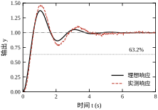
理想响应（同一采样周期 T_s=0.02 s 的离散仿真）M_p=37.19\%、t_r=0.418 s、t_s=3.56 s；叠加非理想因素后变成 M_p=45.87\%、t_r=0.401 s、t_s=6.08 s。三项变化各有其主因：
这也从反面说明为什么不能用“首次进入”定义 t_s：在这组数据里，输出在 0.64 s 就首次进入 ±2% 带，而此时峰值还没到，后面还要冲高 46%。用首次进入会把 6 s 的系统判成 0.6 s，误差十倍。
现场试验建议按四步做，每步都记三路信号，见表 37-14。
表 37-14 现场阶跃试验的四步
| 步骤 | 阶跃幅值 | 目的 | 观察重点 |
|---|---|---|---|
| 静态标定 | 0.1% 行程，多点 | 测死区、间隙、分辨率 | 输出是否有“不动区” |
| 小阶跃 | 1%–2% 行程 | 测线性度与噪声 | 是否被噪声淹没 |
| 中阶跃 | 10% 行程 | 测 M_p、t_r、t_s | 与仿真偏差 |
| 极限阶跃 | 50%–100% 行程 | 测饱和与抗饱和 | 控制量是否长时间顶格 |
小阶跃最容易被跳过，但它恰恰是判断“能不能做精密定位”的依据：如果 1% 行程的阶跃响应完全看不出形状，说明噪声或死区已经大于该幅值，此时讨论超调百分比没有意义。
同一台设备，用不同口径可以得出“合格”与“不合格”两种结论。因此验收文件必须把六件事写死，缺一项就会在验收会上扯皮。表 37-15 是一份可直接套用的条款模板。
表 37-15 时域指标验收条款模板
| 要素 | 必须写明的内容 | 常见争议 |
|---|---|---|
| 激励 | 阶跃幅值、起点、方向、是否回零 | 用 1% 还是 50% 行程 |
| 误差带 | 绝对带宽（如 ±0.2 mm）或相对带宽（±2%），二者取严 | 只写“±2%”导致小行程过宽 |
| 测量点 | 编码器、光栅尺还是负载端 | 传动间隙是否计入 |
| 延迟 | 是否计入 t_r、t_s，从指令发出还是从控制量变化起算 | 通信延迟归属 |
| 工况 | 负载、温度、供电电压、预热时间 | 冷机与热机差异 |
| 判据 | 重复次数、取平均还是取最差、允许的超调上限 | 三次两合格还是全合格 |
经验做法是“三次取最差 + 绝对带宽优先”。三次取最差能过滤偶发干扰，又不至于像取平均那样掩盖一致性差的问题；绝对带宽优先则避免小行程时相对带宽失真——10 mm 行程的 ±2% 是 0.2 mm，1 mm 行程的 ±2% 只有 0.02 mm，后者往往已经小于编码器分辨率。
把这些要素写成条款，应该是这个形状（以本章伺服轴为例）：
在空载、25 ℃、预热 30 min 的条件下，施加 0→10 mm 正向阶跃（满行程的 10%），以负载端光栅尺为测量点，采样周期 2 ms。超调量以实际稳态值为基准，不超过 5%；上升时间按 10%→90% 定义，不超过 0.10 s；调节时间按 ±0.2 mm 绝对带定义，自阶跃指令发出时刻起算，不超过 0.50 s；稳态误差不超过 0.02 mm。每工况重复三次，三次全部合格判为通过，任一次超差即判不通过。
这段文字里没有一个形容词，全部是可测的量。反过来，条款若写成“响应快、超调小、稳定可靠”，验收就变成了比谁嗓门大。
再好的参数，只要有一处限幅没做，现场就可能撞机。按信号流方向，五层限幅缺一不可：
五层里最容易被忽略的是第 2 层的“限幅后处理”。只做 u=\mathrm{sat}(u) 而不做抗饱和，在大阶跃时积分会一路涨到饱和值，等输出到位后需要很久才能退出来，表现为“到位后继续冲、然后慢慢回调”。这个现象在第 44 章会详细分析，这里只需记住：限幅与抗饱和是一对，不能只做一半。
限幅值定在哪里，不能凭“留点余量”拍板，要看控制量的实际峰值。取 §37.4.7 的 PD 设计（K_p=13.4、T_d=0.1045 s），只改微分滤波时间常数 T_f，实测控制量峰值如下：
| T_f (s) | 控制量峰值 | M_p (%) |
|---|---|---|
| 0.050 | 41.41 | 39.92 |
| 0.020 | 83.42 | 22.45 |
| 0.010 | 153.43 | 18.25 |
| 0.005 | 293.46 | 17.21 |
| 0.002 | 713.55 | 16.79 |
T_f 缩小 25 倍，控制量峰值涨了 17 倍（41→714），超调只从 39.9% 降到 16.8%。这笔交易极不划算：从 0.01 s 再往下压到 0.002 s，超调只降 1.5 个百分点，执行器却要多扛 4.6 倍电流。换言之，一个没做滤波限幅的 PD，在阶跃瞬间向驱动器要的电流是稳态值的上百倍——现场看到的“过流保护一跳、系统就复位”，多半不是控制器算错了，而是这里没设防。
把同样的回路加上饱和，扫描限幅值（T_f=0.01 s，T_s=1 ms）：
| 限幅 | 控制量峰值 | M_p (%) | t_r (s) | t_s (s) |
|---|---|---|---|---|
| 不限 | 153.43 | 17.40 | 0.070 | 0.404 |
| ±100 | 100.00 | 14.00 | 0.078 | 0.405 |
| ±40 | 40.00 | 4.72 | 0.122 | 0.407 |
| ±20 | 20.00 | 2.46 | 0.161 | 0.406 |
| ±10 | 10.00 | 1.93 | 0.185 | 0.286 |
| ±5 | 5.00 | 1.72 | 0.206 | 0.329 |
| ±2 | 2.00 | 1.31 | 0.271 | 0.441 |
| ±1 | 1.00 | 1.51 | 0.369 | 0.585 |
这张表会颠覆很多人的直觉：加上限幅，超调反而变小了。 原因是限幅最先削掉的正是那个 153 的微分冲击，控制量一开始就没那么猛，峰值自然低。代价全部记在上升时间上——\pm40 时 t_r 从 0.070 s 拉到 0.122 s（慢 74%），\pm1 时 0.369 s（慢 5.3 倍）。到 \pm2 以下，超调已经不再下降（1.31% 触底后回到 1.51%），说明此时决定形状的已经不是控制器，而是限幅器本身；继续调参数不会有效果。
由此得到两条实操规则。第一，报指标必须连带声明限幅值：同一套 K_p、T_d，不限幅报 17.4%、\pm40 报 4.72%、\pm5 报 1.72%，三个数都“真实”，但不可比。第二，限幅值应定在“刚好不削掉正常响应的峰值”之上：本章设计若无特殊理由，取 \pm40 附近即可，再低就把动态让给了限幅器，再高则失去保护意义。至于 t_s 在表中不单调（0.404→0.405→0.407→0.286→0.329→0.441→0.585），原因与 §37.7.7 所述相同：它由“最后一次越出”决定，限幅改变了振荡相位，越带时刻就跟着跳。
控制调试最大的浪费是“上次调好了，这次复现不出来”。原因通常不是参数丢了，而是当时的环境没记。每次改动至少记录表 37-16 中的七项。
表 37-16 调参记录的最小字段集
| 字段 | 示例 | 为什么要记 |
|---|---|---|
| 日期与版本 | 2026-10-20，固件 1.3.2 | 区分代码变更影响 |
| 参数组 | K_p=1.0、T_d=0.2 s、T_f=0.02 s | 复现的前提 |
| 采样周期 | T_s=0.02 s | 决定离散化误差 |
| 负载与温度 | 空载，25 ℃ | 参数漂移的解释 |
| 激励 | 10 mm 阶跃，正向 | 指标与激励绑定 |
| 三项指标 | 45.9%，0.40 s，6.08 s | 对比基线 |
| 异常现象 | 到位后有 3 次抖动 | 下次排查的线索 |
记录不需要多复杂，一张表、七列就够。它的价值在三个月后：当客户说“比以前慢了”，你能立刻判断是参数变了、负载变了，还是代码变了。
以 §37.10.2 的实测为例，一条合格的记录应该长这样：K_p=1、T_d=0（纯比例），T_s=20 ms，空载 25 ℃，正向 10 mm 阶跃，测得 M_p=45.87\%、t_r=0.401 s、t_s=6.080 s，异常现象是“到位后仍有约 6% 的往复抖动”（末 2 s 峰峰值 0.064，折合 0.64 mm）。
同一组参数换随机种子重复五次，结果并不是同一个数：t_s 在 6.08–7.80 s 之间，极差 1.720 s（相对 23.9%）；M_p 在 45.87%–47.64% 之间，极差 1.76 个百分点；t_r 倒是稳定在 0.400–0.419 s。所以记录里必须写“这是第几次、五次的范围是多少”——只报一次结果，等于报了一个随机样本。
三条记录纪律值得写进班组规定。第一，记录每一次，不是记录最好的一次：只留最优值，等于把系统的分散度藏起来，下次复现必然失败。第二，参数与激励必须成对出现：M_p=45.9\% 单独没有意义，配上“10 mm 正向阶跃”才是可比的数据。第三，异常现象照原话记：“响了三下”“到位后往回弹一点”这种描述，比事后补一个“疑似振荡”更有排查价值。
这五次重复还暴露了一件事：t_r 稳定而 t_s 分散，说明分散度来自“最后一次越出”这一判据本身。噪声让曲线在 \pm2\% 带边反复进出，越带时刻就带上了随机性。若验收只卡 t_s，就必须规定重复次数与判定规则（三次全过才算过），否则同一台设备能同时被判合格与不合格。
还有一条常被忽略：记录里要写当时改了什么。调参是连续的过程，若只记结果不记动作，最后无法回答“是哪一步起了作用”。最小做法是在表下加一行“本次改动”，一行字即可。
第一，先用小信号定噪声底，再用大信号定动态。 小阶跃看不出形状，说明噪声或分辨率不足，此时任何调参都是在放大噪声。
第二，把 80% 的时间花在测模型上。 延迟、死区、间隙这三个数一旦测准，参数往往一次就到位；测不准则要反复试。
第三，指标不达标时先问“是谁的责任”。 若 t_r 受限于执行器饱和或结构刚度，改控制器无用；若 t_s 受限于噪声与死区，改参数只能缓解。控制工程师要能拿出数据说明瓶颈在哪，而不是无限调参。
三条经验的共同点，是先把不确定度压下去，再谈优化。回路里能改的只有控制器，而指标的上限由模型、执行器与噪声决定；这三样没测清之前调参数，等于在一把不知道刻度的尺子上做微调。
以本章的数据为例：输出叠加标准差 0.01（满量程的 1%）的噪声，t_s 就从 3.56 s 变成 6.08 s，五次重复的极差 1.72 s（24%）；执行器死区 0.05 带来 1.4% 的固定偏置，死区加倍，偏置几乎也加倍；延迟从 0.05 s 增到 0.10 s，M_p 从 46.6% 涨到 60.8%。这三件事没有一件能靠“再调一轮 PID”解决。反过来，把噪声滤掉、把死区测准、把延迟压到 0.03 s 以内，同一套参数立刻好用——这就是“80% 的时间花在测模型上”的真实含义。
本章用 \zeta、\omega_n 两个数把闭环行为讲清楚了，代价是丢掉了很多信息。这一节划清能力边界，避免把二阶结论套到不该套的对象上。
把高阶系统当成二阶处理，依赖三条前提，任何一条不满足，式 (37-6) 给出的超调就不再可信：
三条同时满足的系统并不多。伺服位置环、直流电机转速环、部分温度回路是典型适用对象；多容液位、精馏塔、大惯性热工对象通常不满足，需要降阶或直接上频域方法。
三条前提的违反成本并不相同，可以排个序。极点间距不足最“温和”：2 倍远时 t_r、t_s 各偏大约 18%，形状还对，只是数值不准。零点最“凶”：\rho<1 时超调能从 16% 抬到 48%，右半零点直接把起始方向拉反。延迟最“隐蔽”：t_r 甚至变小，看起来更好，M_p 与 t_s 却成倍恶化（§37.4.5）。
所以现场复核的顺序应当是：先看有没有延迟，再看有没有靠近虚轴的零点，最后才检查极点间距。前两条会改变结论的方向，第三条只改变数值大小。顺序反了，就会在“指标偏大 18%”这种小问题上反复纠缠，却漏掉真正让系统振起来的那个延迟。
五个指标都是在单位阶跃下定义的，这决定了它们只能回答很窄的一类问题。表 37-17 列出它们没说的事。
表 37-17 时域指标没有覆盖的内容
| 指标没说的 | 后果 | 该看什么 |
|---|---|---|
| 抗扰能力 | 跟踪好不等于抗扰好 | 扰动阶跃响应、灵敏度函数峰值 |
| 控制量大小 | 指标合格但执行器过载 | u(t) 峰值、饱和时间占比 |
| 鲁棒性 | 标称指标好，参数一漂就振 | §37.6.4 的摄动表、增益/相位裕度 |
| 跟踪非阶跃信号 | 斜坡、正弦、随机信号的误差 | 型别与误差系数、带宽 |
| 多变量耦合 | 单回路合格，联动后互相激励 | 相对增益阵列、耦合分析 |
| 非线性行为 | 死区、饱和、摩擦下的表现 | 描述函数、§37.10 的实测 |
其中最容易出事的是“鲁棒性”一行。表 37-13 里 ZV 整形那一行就是典型：标称 M_p 为零，参数只漂 10%，残余超调就升到 3.1%（\zeta）或 5.7%（\omega_n）；漂 20% 则到 6.6% 与 11.1%（表 37-12）。指标是标称点的快照，不是全工况的保证。
第二容易出事的是“控制量大小”一行。§37.10.4 那张表里，同一套 K_p、T_d 在限幅 \pm1 与不限幅两种情况下，M_p 都小于 18%，看上去都合格；但不限幅时控制量峰值 153，执行器根本撑不住。指标合格而执行器过载，是验收环节最常见的一类漏判——所以验收单上除三项时域指标外，必须再加一行“控制量峰值与饱和时间占比”。
出现下列任一情况时，本章的方法只能作为初值，不能作为结论：
五条里有三条可以用本章的仿真脚本当场量出来：延迟用阶跃法测，死区用正反向小阶跃测，饱和用不同幅值阶跃测。测完再决定要不要换工具，比凭对象名称判断可靠得多。
这些正是后续章节的入口：稳定性判据、根轨迹与频域方法在第 38–43 章，PID、串级、前馈与大延迟补偿在第 44–47 章，状态空间与最优控制在第 51–65 章。
现场拿到一个新对象，可以用下面五个问题快速判断本章方法能不能直接用。任一项答“否”，就按 §37.11.3 换工具。
这五个问题不需要任何仪器以外的工具，一台示波器、几次阶跃就能答完。它们比任何公式都更能决定“该不该用二阶模型”。
本章是时域篇的入口，作用是建立三件事：指标的确切定义、指标与参数的定量关系、指标背后的结构限制。后续章节在这三条上继续加深：
一句话总结本章的定位：它不教你设计控制器，它教你判断“这个指标能不能达到、代价是什么”。 这个判断力，比记住任何一个整定公式都更耐用。
控制理论有三套常用语言，本章只用了其中一套。把分工说清楚，才知道什么时候该翻到下一章。
| 你面对的问题 | 首选语言 | 本章能提供什么 | 本章给不了什么 |
|---|---|---|---|
| 验收、合同、现场沟通 | 时域 | 全套指标定义与算法 | 多变量指标 |
| 稳定性够不够、延迟能忍多少 | 频域 | 临界延迟、PM 与 \zeta 的换算 | 精确的奈奎斯特判据 |
| 控制器结构怎么选（超前、滞后、PID） | 频域 | 指标到 \zeta、\omega_n 的目标 | 校正装置的具体参数 |
| 多输入多输出、耦合强 | 状态空间 | 单回路初值、降阶判据 | 解耦、极点配置 |
| 非线性、饱和、摩擦 | 时域仿真/描述函数 | 非理想因素的实测方法 | 极限环的解析预测 |
| 指标含随机成分、噪声 | 频域/统计 | 噪声对 t_s 的影响量级 | 功率谱设计 |
三套语言不是替代关系，而是“粗调—精调—校核”的关系。典型工作流是：先用本章的时域指标把目标定下来（要多快、允许多大超调），再用频域方法设计校正装置并检查裕度，最后回到时域仿真做验收。反过来，只做频域设计不做时域验收，容易出现“裕度很漂亮、超调却超标”的情况——因为裕度是线性、小信号、频域的指标，而验收看的是大信号、时域的峰值。
对本书的读者，建议的学习顺序是：本章（时域指标）→ 第 38–41 章（稳定性判据与频域）→ 第 43–44 章（校正与 PID）→ 第 45–47 章（串级、前馈、Smith）→ 第 51–65 章（状态空间与最优控制）。先把“指标”这把尺子握稳，后面每学一种方法，都能用它量一量“到底改善了多少”。没有这把尺子，学再多方法也只是记住一堆公式。
本章所有数字都可用 code/ch037_sim.py 复现，图由 code/ch037_figs.py 生成。核心只有两步：用 control 求闭环阶跃响应，用 simlib.step_metrics 统一提取指标。下面这段 20 行的脚本足以复现 §37.9 的对比表。
import numpy as np
import control as ct
import simlib as sl
# 伺服轴模型 G0 = 10/[s(s+2)]
G0 = ct.tf([10], [1, 2, 0])
t = np.linspace(0, 12, 12000)
# 比例 + 比例微分：Kp 定尺度，Td 定形状
for Kp, Td in [(1, 0.0), (1, 0.2), (1, 0.4), (3, 0.3)]:
C = ct.tf([Kp * Td, Kp], [1]) # C(s) = Kp(1 + Td*s)
cl = ct.feedback(C * G0, 1) # 单位反馈闭环
_, y = ct.step_response(cl, T=t)
m = sl.step_metrics(t, y) # 统一口径：2% 带
print(f"Kp={Kp:>1} Td={Td:>3}: Mp={m['overshoot']:6.2f}% "
f"tr={m['rise_time']:.3f}s ts={m['settling_time']:.3f}s")输出与表 37-13 逐项对应：
Kp=1 Td=0.0: Mp= 35.09% tr=0.425s ts=3.536s
Kp=1 Td=0.2: Mp= 10.42% tr=0.474s ts=1.676s
Kp=1 Td=0.4: Mp= 1.61% tr=0.455s ts=0.678s
Kp=3 Td=0.3: Mp= 4.77% tr=0.189s ts=0.828s要在仿真里叠加现场的非理想因素，只需换成离散仿真接口，参数与 §37.10.2 一致：
# 噪声 0.01、量化 0.02、死区 0.02、延迟 2 拍（Ts = 0.02 s）
r = sl.simulate_discrete(G0, 1, Ts=0.02, N=400, noise_std=0.01,
quant=0.02, deadzone=0.02, delay_steps=2)
m = sl.step_metrics(r.t, r.y)
print(f"Mp={m['overshoot']:.2f}% tr={m['rise_time']:.3f}s ts={m['settling_time']:.3f}s")输出为 Mp=45.87% tr=0.401s ts=6.080s，即图 37-11 中的“实测响应”。三点使用提示：
step_metrics 的稳态值取末段 2% 长度的均值，因此仿真时长至少要是调节时间的 1.5 倍，否则小阻尼情形会把残余振荡当成稳态（§37.2.3 的陷阱）。ch037_sim.py 不是把公式堆在一起，而是按“从环节到系统、从连续到离散、从理想工况到非理想工况”的顺序分五段。每段都能单独运行、单独对照正文，改一段不会影响其他段。
第一段：典型环节。 对 T=0.5,1,2 s 的一阶环节做阶跃，验证 t_r/T=2.19、t_s/T=3.89 两个常数。这段的作用是“校准口径”：如果这里算出的比值不是 2.19，说明 step_metrics 的插值或稳态估计有问题，后面的数都不必看。
第二段：阻尼比扫描。 固定 \omega_n=5，取 \zeta=0.1–1.5 七个点，把仿真超调与解析式 \exp(-\pi\zeta/\sqrt{1-\zeta^2}) 逐行对照。实测的七个点与解析值的偏差都在 0.02 个百分点以内（\zeta=0.3 时 37.21% 对 37.23%）。这段验证的是“公式没写错”，也是全书 step_metrics 的基准测试。
第三段：采样周期与谱半径。 连续闭环与 T_s=0.02/0.1/0.2/0.4 s 的离散闭环并列，同时打印闭环极点模的最大值。谱半径是比指标更早的警报：它接近 1 时，系统已在稳定边界附近。但要注意口径——表 37-8 的谱半径是对“连续闭环传函”整体做 ZOH 得到的，而逐拍仿真用的是“对象与控制器分别离散”的采样系统，两者不是同一个模型。因此谱半径只用来看趋势，不能与表中的 t_s 逐行对应；要判断采样系统的稳定性，应直接对“离散对象 + 离散控制器”求闭环极点。
第四段：延迟稳定域。 对 G=2/[(s+1)^3] 加 0–2 s 的延迟（三阶 Padé），打印最大极点实部、峰值、终值与超调。这段演示的是“理论稳定 ≠ 可用”：\tau=1.5 s 时最大实部 -0.0032，判据上稳定，响应却在 20 s 内看不出收敛。脚本故意保留这一行，就是为了让读者看到判据与工程直觉的差距。
第五段：工程细节注入。 在 T_s=0.02 s 下依次注入饱和、死区、量化、噪声、延迟，输出与 §37.5.7 的表逐行对应。这段的用法不是“看哪个数最好”，而是“看哪个因素最敏感”：同样的参数，噪声把 t_s 从 3.56 s 推到 6.08 s，延迟把它推到 7.74 s，而死区只改稳态。先解决最敏感的那一项，调参效率最高。
脚本把对象集中在 plant_srv() 一个函数里，换对象只需改这一处：
def plant_srv():
"""把这里换成自己的对象：分子、分母按降幂排列。"""
return sl.tf([10.0], [1.0, 2.0, 0.0]) # 本章：10/[s(s+2)]
# return sl.tf([2.0], [1.0, 3.0, 3.0, 1.0]) # 例：2/(s+1)^3换完之后，五段脚本会自动用新对象重算，指标口径不变。三处需要同步检查：
坑一：时间轴不等间隔。 control.step_response 在不传 T 时返回的是自适应时间点，直接喂给 step_metrics 会触发“time values must be equally spaced”。正确写法是先构造等间隔的 t，再传 T=t。本书所有调用都遵守这一条。
坑二：把末值当稳态。 小阻尼系统的响应在窗口末端可能仍在振荡，y[-1] 与真稳态能差 10% 以上。step_metrics 取末段均值只是缓解，不能根治；根治的办法是窗口足够长，并用“最后 10% 窗口内峰峰值小于 1%”做二次确认。
坑三：延迟的单位。 simulate_discrete 的 delay_steps 是拍数，不是秒。T_s 改了而拍数没改，等效延迟就跟着变；反过来，想把延迟从 40 ms 改成 60 ms，要先算 60/20=3 拍。这个错误在复制粘贴代码时最容易发生，且现象很隐蔽——指标只是“稍微变差”，不会报错。
坑四：把闭环传函再闭环一次。 sl.step_data(G, C) 内部做的是 closed_loop(G, C)；若手里已经是闭环传函 T(s)，必须用 ct.step_response(T, T=t)，否则等于给 T(s) 又套了一层单位反馈。这样稳态值会变成 T(0)/[1+T(0)]：T(0)=0.909 被算成 0.476，M_p 从 24.9% 变成 38.2%。这个坑危险在于曲线形状仍然“像”阶跃响应，只是所有数值都不对，肉眼看不出来。
本章脚本是后续章节的最小骨架。第 38–43 章会在同一对象上加判据与频域校核（sl.margins、sl.bode_data、sl.root_locus_data），第 44 章会把 C = ct.tf([Kp*Td, Kp], [1]) 换成完整 PID、抗饱和与二自由度结构，第 51–65 章会把 ct.tf 换成状态空间，而 simulate_discrete 的接口与 step_metrics 的口径始终不变。
可复用的只有四件东西，其余都要重写：
| 复用什么 | 在哪 | 后续章节怎么用 |
|---|---|---|
| 指标口径 | step_metrics |
全书统一用 10%→90%、±2%、末段均值 |
| 离散仿真环 | simulate_discrete |
只换控制器，非理想因素开关不变 |
| 频域数据 | margins、bode_data |
第 41 章的裕度验收直接调用 |
| 现场因素清单 | §37.5.7 的五项 | 第 44、47 章逐项深入 |
换句话说，指标口径与仿真骨架是全书复用的资产，控制器结构才是各章变化的部分。把这一章的脚本跑通、改对，后面每一章都能省下大量重复工作。
完整脚本还包含一阶时间常数校验（表 37-2）、\zeta 扫描（表 37-3）、采样周期与谱半径（表 37-8）、延迟稳定域（表 37-9）四段，运行时只依赖 numpy、scipy、control，单次执行只需几秒。